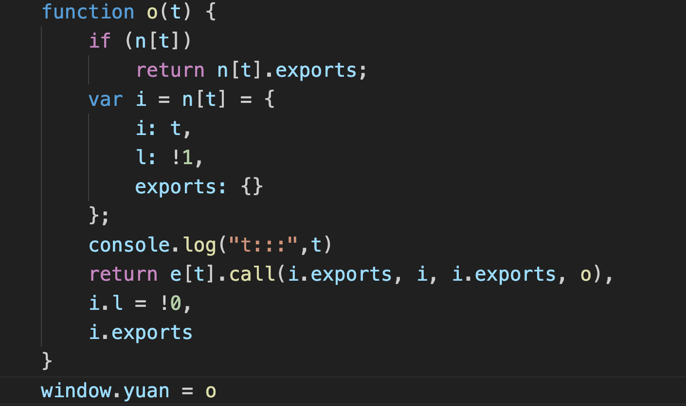
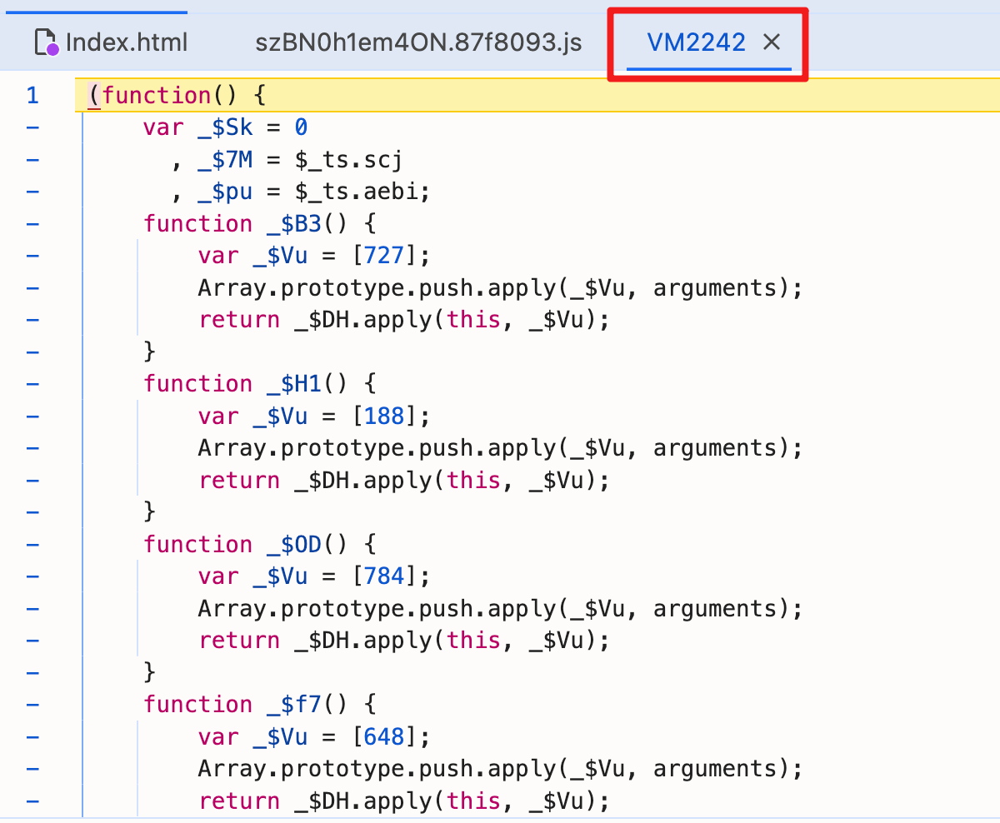

二十九、高级逆向03
一、Webpack逆向
1、概念与 安装
Webpack是一个现代的静态模块打包工具，它主要用于前端开发中的模块化打包和构建。通过Webpack，开发者可以将多个模块（包括JavaScript、CSS、图片等）进行打包，生成优化后的静态资源文件，以供在浏览器中加载和运行。
Webpack的主要功能和特点包括：
- 模块化支持：Webpack将应用程序拆分为多个模块，通过模块化的方式管理和加载依赖关系。它支持CommonJS、ES module、AMD等多种模块化规范，并且能够将这些模块打包成最终的静态资源文件。
- 打包和压缩：Webpack可以将多个模块打包成一个或多个最终的静态资源文件。它支持对JavaScript、CSS、图片等资源进行压缩、合并和优化，以减小文件大小，提升加载速度和性能。
- 资源加载管理：Webpack可以处理各种类型的资源文件，例如JavaScript、CSS、图片、字体等。通过加载器（Loader）的配置，Webpack可以对这些资源文件进行转换和处理，使其能够被应用程序正确地引用和加载。
安装
npm install webpack
npm install webpack-cli
/*
!function(形参){加载器}([模块1，模块2,...])
!function(形参){加载器}({"k1":"模块1","k2":"模块2"})
*/
window = global;
!function (e) {
var t = {};
function n(r) {
if (t[r])
return t[r].exports;
var o = t[r] = {
i: r,
l: !1,
exports: {}
};
e[r].call(o.exports, o, o.exports, n);
return o.exports.exports;
}
window.loader = n;
// n("1002");
}([ function () {
console.log("foo");
this.exports = 100;
},
function () {
console.log("bar");
this.exports = 200;
}]
);
console.log(window.loader(0));
console.log(window.loader(1));
window = global;
!function (e) {
var t = {};
function n(r) {
if (t[r])
return t[r].exports;
var o = t[r] = {
i: r,
l: !1,
exports: {}
};
e[r].call(o.exports, o, o.exports, n);
return o.exports.exports; // 返回 o.exports.exports，而不是整个 o.exports 对象
}
window.loader = n;
// n("1002");
}({
"1001": function () {
console.log("foo");
this.exports = 100; // 直接修改 exports 变量
},
"1002": function () {
console.log("bar");
this.exports = 200;
}
});
console.log(window.loader("1001"));
【2】医保局案例
# 页面：
`https://fuwu.nhsa.gov.cn/nationalHallSt/#/search/pharmacies?code=90000&flag=false&gbFlag=true`
# 接口：
`https://fuwu.nhsa.gov.cn/ebus/fuwu/api/nthl/api/CommQuery/queryRtalPhacBInfo`

【3】响应解密
【4】入口定位
搜索interceptors.response.use


【5】基于webpack逆向解密
可以进入u.b深入挖掘和复原，但是更简单的做法是直接构建u.b

将loader拿到本地,构建loader.js
-
补上window对象
-
将构建函数赋值给window对象，方便全局调用
-
注释一些初始化代码，防止补无效环境

- 将调用模块打上日志，可以观察调用信息

构建主逻辑main.js
require("./loader")
console.log(window.yuan("7d92"))
u = window.yuan("7d92")
// 1. 测试解密代码
// 注意e别拿错了
function decrypt() {
e = {
"data": {
"code": 0,
"data": {
"signData": "4QJOwsGQ893uRFwW8Q0VqkJxck81/Qk3gIvEFaQ5QsjkPxHgI7nKWfXLwmTTz2MyIr+riAuQLAq/mOewQoj+eQ==",
"encType": "SM4",
"data": {
"encData": "943195DDA5E5337E08E0A527071CC637E0074CBD73D293A3643B2199C79561872E19ABE7BB2600D23E9CDB14C1A75194C1D3C735D2DCC50E297311A423B72BF0AE4781F770874C1AC923AD26618311F182DFD96DBF46FD4EB0475F347756783DC91AC1A85DDB6CF1E859ED27C0247D0B8E38E87D09B74B6183D722C9C5BC1FC8ABAA64B40827F66C7103DA3EC1CB79357FA4DE3E012936C754BE9094F60BF6B2766C9AE3D07CE1FBB7E810B20BD8C3724DB6D42E72B47D0195A67AE2B577CD1D85691761F12307EFB8EC17C4BB862B453EDEDBBC80BDA91EEA41F58FD3084EE54C4635B12D1596B64ED66980BEAA24874B2922A40A9EB2B42DFA547101ED9203E6C5FE982E8DB540CAABCF72755B3D344B45B84A1FF82F77F00CA1BC99A6E68BDE8A1062158A1E40CC34236D58F32E155DD963A198B81AA0C508CB8912AAF75B92DA07444DA1526331109FAA4B5190B528103F9EDABB6C76CA5A6C1F24BDBFBD81A8A4440B0BB5493048C4001EE2B6F88791A859764475AE5365FE5F2D3207DFF94B8CA83EDEE175700A24EEC5F869495626E7300E3E1C43B432B84E47D8B0109BA756CBF627CA3CA91138F764E4E79AC1D8FD1A1155B7DCE9665B3A1856E1BB6193DDE8EC8D80ECD137DC24B04BFC7DC3EEE373E0A71DDCBEAA0D6F8350F6A423CA60D48BE079AB959EB56975CF1DD2FD2EA5223C14436C0A1BCD6095A980452F7E0A6E85087957FBC1FA19369DCDCF2FF575E5A08224248A668A514D1EFBDB7A11056C9481CD9B3BAD3A6EB6E62B4BCA23D6131B2B2958BD807E1453C5447EAF0BC5D15EFD6B978B4F44C0CD088034929FD30C638E7F5CC7435914EB1582FF2C2BB08DBE0B2BD1B51D9E023B61B03AFDBECFE523CF3EA2DF64CF27421C0DFA374E70E692C52655A4B78BAA0F62FA0B70165FA33E1A32E6430EC13911F08993941400D3F018F4D3E814C13ECD2E8B098DF426A1A90422D40FE350AA784246D2582ED934A2128B607854B0A38F84DAA630D4F1229ED3A1B9A54758C46F1654A6FA86E3F98B0EB5C8BE9E93D8BB65E30097D9663D775BA1483515B9D36E8AF8598BC5CC1309E79CD4D9A6401DA15F5F821A81D03D58A49869A51AB219E228808A37222075760E5D8FD3BFE2FF70D827AA18CAFDBB5EEEAF0DACBB17BDDC993D0F9027473065419DD7AD3B182A745585CA21D57D8782DFB3EAAD3170EE20045CAC80B046CBC22D5D5F71986E59A08EEF3AE412EE5DA72B65BFEFE9CA98FCEFF3DE75D6F24E3D0925FD1B0FBDF905FBB1641DC00B2C059FF432406F67960E6BA12F934748FE06769569BBC4E47D1DBBE6E4DF17DBF0AF690467B3A81157327E1C1B12547A651EC2F1F754187475C3E806AFFA8F635ACA0FA92614BF9B9D02E31BDD417B8840242DF9095293D8240B3736D157246C9C9E24BF8151DE0737E76497F195B88CFE3489F0CC825C24908F0F356D54F2306B41914731409C6E254BB84C870C6B938FB449B3366909044B240D4745961F9F7871370E77A523F9991C659F0CCB3F53A3E33BD924E023CB4D2466FE5FD8808027665DC09B81DD86C4FBAF26D4AD0D3D99C54A971331C1310095F1798A6D5127735CD1B6D22CD0C8C09CDA1E6F972FECBC7DD09970E3A28577413984D5027523668887593B3E35A88FBF7FA063DF18AAC85044EAB1691D6A120810293193A755FE43F994D4A56470C7B0458C80BE5B8CB156B6C07FEAE5DF62DDC46358440021AD99E46B818627912383E163B0705F510B8F1A4BB3EE5241197B24C16DC3271506884F6FC59D86D02876EE5CF2C2FCD02422AECF3892FD08C8EEE0C6D1B004E462B1AC835F03A779BE611D970852E512FB1F52323EADEB7420AD34B9ABF4740826770C4FE19C344AD90AA910DAA361F6FC54CBF9BD275AFD7BFFA665837708052B4BD9B64923A6C39EA92374F9DBAE2E91D757CCFB10FCEFE2E92408CF49C45774F384EA4914C930BC75B26D631CC3D1BFDD4E0A2D4D5C6D2646F8FC6E15C17577ABEA801BCA1E9297489C2F26A03C5630F760D3389C522FDCD358AF61907228575692F06822201465AEF3F844987C9F48ED0ED2F84D721D60709D65998445F52CAAEA8A93FB4FD203C7EACB507942990037055ED3A24F07066B0A82E05CD081B1BA63346C6354C8497CB0862AAD0D3D99C54A971331C1310095F1798AB0A49036B1E8947ED3A6BE0C8083A54B007D758DBE404BBCE666CDDFD56719E55AA1DE72CB2FB53B89CC69386A27D0E115BF94C575D25BE66DD75BFDD7E075D697D9663D775BA1483515B9D36E8AF859E0225BF1FB9E7004DD40097742F940293815FCABFABE9509A2DA3C61A20078B46A855D0BCC3615E3A63A1861677123A2EC6B5C96694E69963053D0A6F0DA70178594696D042559F474208688CE821485D5C1396BAADB01031C1A3B469CA6A60ADAD2ABD62EEF87E582AC769848583ECE29FAC03CA372F7A6D0765D6D68BE08165D4122B52FE86038CA0E7A33AEAE03D21A91C78B848DED57CA24306716CE130E42B1E36871B2AE2FDF14F135CE72FB5BD84F6987D9F23D9FDE76D1CD4EB1B48435FAC7CDF743DB43E10C50355C0AB5537DABBDB59EA2F8549823D373342CCFBC640C947444C755210A36291EC920394FCA37CD8D9BD895566C8462E43F8407CE70E5C50B8BAD6953F84A34FB06FA640218EC6F9A44A974D9B23C10556F766BB7200162303EC72ABC55B1B0A9F40A4ECB97D9663D775BA1483515B9D36E8AF859D256A8CD4A6FA861DFF480017267354824DD5BF0EC07D029D31CE465790837FB1B5799057B17FC5DAA9C2854EC75D5AC00B787AFA653C5964747618DFBCED145843B8A934B01B9CCF6E6DC8CA1045AA8A1BA0CB34A761326BDBA6ED6B4CB64887505E4F46E47B3CA40AC55CB8162BD146EB4471EB225248A5D756F5A9F7EE8598C33F277B985298F23DE9CB2815527DD8FCC5A373E4C2CB2CBF10CCEE7874FAD31B2E8A796AF977BA38F66B781D11F64B814B3C4709EA945FCC22E2564102114900C3F00534BEFC5758CE38A616BE18AD6DDA7119F8428138AABB75A2A291B6BBE5FF87174B9D0288BFC3670B8DBDD431C5D6F06307389DC291E48C151719519493EF7929CF1F3D21CD4F0CCBA3E6507E74492A65EA3BCF285E6573C14EF1C2F2C0DA2D0100600B53858408177C59C05987C9F48ED0ED2F84D721D60709D6599F4961FFD22A3208CD49DD84B8CFAEFE818EC8B31EB047C322A6E8FF34D04C16D2F1274B247E0629F951B7C148B264FFDC98B6EB8989D8202AA3516FFA29B3A1AEE7021A0E3FADE7493B070C9CDDE94E05D0AA02749823F1B93B16ECF30AF6308218550D8DFF01F48E02BD424E92512C5C5B1A27867767F7BEEF279DFCFE4E681BBBD5DB53EA5E7154071E74EF0BE481E71BBECD3DB8BF0D94D5BB630597E70D1BBBD5DB53EA5E7154071E74EF0BE481EC937762E26C1C310788AB9A66822912263CC20EB6AF79BF07AD98986282B0CA1A193DCD8F079025A99D6E4D42EC9370BC08285E0BF5E5852448A15060CE14BC8AD214202C3712F8FB1B3AFE8CB9886E077830FC1D7FF0FCEC441B45B5839C9DF3BF53F786F8C7E12124F7C6D689A648B9F1142B244FF669F76CD2085344C73F5803E042ABF683F9718FA3EE7A21679BABDAD417EB5EDC97C94E7B340CFBE464E17B4768EA5561668E6850B7AE2C37B1CC84AF2A50887752A72B01584E9C0004EF22CDB67245D1A126F384CD163DD825CF3DA643F9DA436999D1F963BFC00285D2C4B51E46CC029AE6E4ECA8EFC4F5100BDFEE756603654E9264669C2E90E56B54E1C1EF869BA6BF4E370AB9EE65307C6534D3F4F84B12E2B578DA72AF53290571473444F8ADDC5E726EF9FB6EA1469A4F71B48E4D7BD653DAD071E0FF53604253C40DA6DA556EF16716BE3D07296E08D8D760DBB39F47EE77675B19498478D239A72D11B42B012A3FECD2F6F25A290F9934B5CF8FC6B9A65AF9540F414FAC1E811AAF12D40A6B62BF3F76DBCA09248770392DB77A7F2D2CA58AEFC1E8686CADDB37F912821EF5FD88C7BF7E4A8BD51A644D25F61DC577194B9B7FE7DB08C03A29BA2727D169BF7B14D998651A2AD2C388111B4EDA3BE273BC7EC402EEDAD329D4D48E440F62D692AFFA3FDC969C2711C6A6FDE1381DCFAC20033D0B114ECE1F7F2E7460846A4D90F253D2F597F40221D7DCB60BBF30E033754691B5509222D89661481F7E683E5D67ECFB4D968FA1A6C640C947444C755210A36291EC920394FC81058A6786D0422B05C18C0CC1D60E94C077BB4831C80E78820138D02A3F3B910C7589B30AA97E737160F13E111A336400B6621C9E19828E1D1BBE352EDBE1798070B0160B2A19B32E913D7BA20375AE84EA79F0E113FFC541D234D451D8E1D523C856783C6E7089E51EA8C1499142E574A19983EAF96C252FD2CA4FB76BD3E8EAC4796E6A4B2C425695DA335940597C70F3AD1203B122E33E4C0EF2DB2E6E4589102D1E82EC3EFAA18996C1825200E26EAE4B33519F04F370F01B9115456393815FCABFABE9509A2DA3C61A20078B4D389B18B6B1C39322647DA4963B40BC483BD82482309349C6940B789B5ABB44565D87627E132D6E8281823416F1B46907C9863497333FCF64E2B7AEDE1B85EC5210F35F57B08B9B878F40C63C649A5B5987C9F48ED0ED2F84D721D60709D659971D9C0926A245E4BED5121356CBC6FBC18EC8B31EB047C322A6E8FF34D04C16DDE809EB0B5A4A449BC2E9402B964FE80EFE6B84B34174F107BF18A7973CCDA7AEC778B189EF445FA79737DB5BE38133F444900A7F1DC60803B5D392B0054FC75663B6A513AAA8686FAE63251D126C31208DCFB0F5D40EF0F18AC8126B0B2A3AF1FCE60A6DBAA20743A287A19310A57711FCA418578F73CC86C032B474492C48332B881964D1DF9197B2B1CF63648A1565F98D5378DE78C8A41A40C053E10205EFF98A4F24F0A5D71CDAE9CB9B232B529F6F80FC310DCF9A05C01F5E125121007D782891DC51DD2FE76D0A6A3E11DBD9888307BF6853C0D24B153FD7CF812BA1B515ADDA4303AFBAE80030E37D1E77DEE97718B79A6C1D2C11C18F0B3AB1E2B3A28359D28B28F791025CD2F7A333964C8994427E653FFB0CA3061E7E6B6846218B446AB60720919F6284D7E4B367AEF4E57EF5554E70DF20419FB905BF6F98DDAAF0F8483CD69C20312A73A7ABB226BAD300628B4ED8F04BD59BBC1BA98C13220AA96A343A18374560F91D963371004EC5EA62FFE81A56DB7B4FCE6D08A383A01444900A7F1DC60803B5D392B0054FC75A2DB48F3FA6E14D5D5F2401E65433BC2961F9F7871370E77A523F9991C659F0C4B19F01672256066F29B06EF7F7FF1B7268E4B6602FF142D01E0860103E90DF9F5A6008408AD264E09112A7317809EF313398FFB689CA58AC611301DD1B37AD3B977432A1F68BB3E6B878728012295CC6A93FB1F98E4B0A12DDDE7A3494616BE181C46666049DE9E13AD1D2B2E085E61C768AD29CFA2B6B32CA347D9F206DD174AC0FD61AD5503F744E927D6D9483E51F39E9029292E41403B95CF3F2E251883629F6B8E51D170F2F0A2FE4CA17891F91E14A5DC37720712CE0F2EA22AF50114C8CABC772776CADEFBD1E0ADC6356B1CD28418CE406FC2C1BA6AF765B3397B47987C9F48ED0ED2F84D721D60709D6599564F2D2F4C08ECBA9CF7E1C9D9EF5FD4DABF2D33EBCBD8B268CC1DEFA5EFC341962625E2EDEF651766FCAFD7CCD294C53815FCABFABE9509A2DA3C61A20078B4CFC8FC2B37372BC988CC8334813A21BD97D9663D775BA1483515B9D36E8AF859175A801AC65C8D6CE7BE5E0285D6AA6F3815FCABFABE9509A2DA3C61A20078B46758C414F8DF0E3C839C66F3425CC5E6A3F712410D40A97CB2B2BBD27E83C14BD03D1D4E2FB7DF972493679EF395559B7942990037055ED3A24F07066B0A82E088BAB2629BD546AEDA7E1C04D24144D0928BE79DC6EADE64277410265C843B404779EE07558B0563C70DCC882F06920DEEFFE04A935B6753ED56B7A7E34A57835EA5355B3A00DC92A40FE29F6F1F1C4E0A8BB8E5972ACD3C0454F966671A0028A76C0967E51EC7A59DC479FDE871384B0DB900551F22DB202380E822B0311C7EE0C21227A0678F5121A42A8D0AEC73A30DB900551F22DB202380E822B0311C7E793EF792D491E0DDDF11EA99F8639A4FA51EFBE85B1660718232C81F7FBB6CCF204ADE2544CD6FCA894BB59990DEB3C51518A23323C8535EEC4FC125010E9390C4D48C14620BF456F4C5688F319B4612E716B3D9C3FFB338EA53382CF610D71AB9FAD7CC239E35538657A66CF301EF0ABA7B1422E824D3C047372237899C4C52B712B224CBD69CE64D734686D2714A9C285322B3C52E8ABC74DF9AF8206F3D26187DDCF931500041E33B714D0D338934F174F1A5200DC2EE0E23DA4EC49DCEDD5EA62FFE81A56DB7B4FCE6D08A383A01444900A7F1DC60803B5D392B0054FC75A2DB48F3FA6E14D5D5F2401E65433BC2961F9F7871370E77A523F9991C659F0C4B19F01672256066F29B06EF7F7FF1B7268E4B6602FF142D01E0860103E90DF9F5A6008408AD264E09112A7317809EF313398FFB689CA58AC611301DD1B37AD3E5638D7EA4D23B75FC48C4695A85952F6A93FB1F98E4B0A12DDDE7A3494616BE181C46666049DE9E13AD1D2B2E085E61C768AD29CFA2B6B32CA347D9F206DD174AC0FD61AD5503F744E927D6D9483E51F39E9029292E41403B95CF3F2E251883629F6B8E51D170F2F0A2FE4CA17891F91E14A5DC37720712CE0F2EA22AF50114C8CABC772776CADEFBD1E0ADC6356B1C8D8FC0CED5F7A956AAF354F16471475E987C9F48ED0ED2F84D721D60709D6599564F2D2F4C08ECBA9CF7E1C9D9EF5FD4DABF2D33EBCBD8B268CC1DEFA5EFC341962625E2EDEF651766FCAFD7CCD294C53815FCABFABE9509A2DA3C61A20078B4CFC8FC2B37372BC988CC8334813A21BD97D9663D775BA1483515B9D36E8AF859175A801AC65C8D6CE7BE5E0285D6AA6F3815FCABFABE9509A2DA3C61A20078B46758C414F8DF0E3C839C66F3425CC5E6A3F712410D40A97CB2B2BBD27E83C14BD03D1D4E2FB7DF972493679EF395559B181C46666049DE9E13AD1D2B2E085E6188BAB2629BD546AEDA7E1C04D24144D042A19DAEB379CA2BC6011DC4A1FB176C7D32930FE120DBBB30585C7327A004AD446BF88DD66F2061F3B48196C3C874CC9700AFBC1F89C4BCEB43C54B3D30C87879BFE00E77258A07010562067813CE59F2A02F00756C8A8BEB8039D420D6D36ED9096C7C2120531BC96EECCFC7DE250B177A69F7A2EDACE2093ACB2BCD47C45B656D5FB82D89286AC381C231F8428931D1FE9E2ACCDC48D54DD0DC4B3DD55F5DB1505B8802CE9347C9B2D0EE0ED66EF09597365E92C07D603B240081D2D9A297B3E67441249CCCF702AA68216D9017F8F4CEDB4EFF2975DA8BFB6D050148BC673324B051B6AB4CA1E3A7D42D14EDA8560D96F51DB4A51B877983975263B15922721624DBCB49BBCDF1B20FFC8AB1EF5DDA7FACF4AE61F63578C15F32826373DA2F512A50FEF595D569AA6FB631EAC04D8B9DB33416EC234496A6AAD671735B24BBBD5DB53EA5E7154071E74EF0BE481EC429551452268BE9C4919E923688457A987C9F48ED0ED2F84D721D60709D65992710F996D1E31CD59B0DA2948536E1ED5D4993D6599F2007E8DD123839F16A3F5205374DBA8E71242A15CBC9A068EFC31A2A4FFAD3221479093EFB3207D13498F9E5D6121EEA43BFF204A958A7A896B86C3E0F10B2FFFFCCF5A13B1766B4870DCE2AD69681A4BF45325339CE9F01DB90A61DF6FAC08BC9F808BE116002CB1C1BC91AC1A85DDB6CF1E859ED27C0247D0B8E38E87D09B74B6183D722C9C5BC1FC8D5E84E1A7ECB9F678655BFDFE7C6185ADE0D4642EC3033A4DC63003938262E8C766C9AE3D07CE1FBB7E810B20BD8C3724DB6D42E72B47D0195A67AE2B577CD1D85691761F12307EFB8EC17C4BB862B453EDEDBBC80BDA91EEA41F58FD3084EE54C4635B12D1596B64ED66980BEAA24874B2922A40A9EB2B42DFA547101ED9203E6C5FE982E8DB540CAABCF72755B3D344B45B84A1FF82F77F00CA1BC99A6E68BDE8A1062158A1E40CC34236D58F32E155DD963A198B81AA0C508CB8912AAF75B9B1648DC03DC2493069270ADFE0B58C5C0F88C2157260C25949B2934A28164AC81A8A4440B0BB5493048C4001EE2B6F88791A859764475AE5365FE5F2D3207DF81A014114D2A35BF113427ECC99BC4BCB95C51588CC417BFA9AB6F43DB55F34CD6047F37D38BE114350EFD1C8D811ABA7F091FCCF971D0B2B17597DC54F0902162E7C55C3C31D5BA0EDB1F9A9D3C19CEC3EEE373E0A71DDCBEAA0D6F8350F6A428A6A7791FCB75AA3EA49208C7A7E3C3AAABD3D76CA9A8A11C42BF5F5FB74B3160AA0AB5EC8EF5E1CB1276645ACE06BBC986BB3AF3A476493CCA7C7FF4E22C052E062A59E6A733D780BFCC2D2D4AABABCE6262DD74FE4E49DC60480748E6B1A992DA614F4D7FAAEF80ECEFE8107264D568D685E0B7A639C4387A43E7789DEB2D791680837C1FF9217DAF5B3AF03D2B39A996331794514801140377E70A74A9D8AB8CE9260F2C3ABF5548FFADB39F01C4BBBD5DB53EA5E7154071E74EF0BE481ECBE780167AA8A242146E3369B7732A2B3815FCABFABE9509A2DA3C61A20078B48A19771A677EDE403A2BA518E5D5ACF87942990037055ED3A24F07066B0A82E07454806472F90D4783C65BA282381D309EF7F74D2A5E852B4E26CD310AF64DDDAD6123B0CFD169D8BC296A04C0F728C4A902FAE39F74B40214651C5200047B0A60A50A9A4E8506A912A75356C2D677DE61AF6A2CEEC3345345E39B12144809A597D9663D775BA1483515B9D36E8AF8593567DB4E4A9011423E13A442EFF6F60A97D9663D775BA1483515B9D36E8AF8591F2CFC1C65A65B934FD56C104FE3640333BF4512BB432390A58F386BB41D3C268CBA1E5C0A86B6C6BAF6371722C96EA22445F6B3FBE14A0B6F6BDD6F1785A88D803E042ABF683F9718FA3EE7A21679BA5E91A3A2D09491FC4806EFE8B6C518390DDEAB7A89CC8E722A89B6B84B2E2539064E75FA72FF95EDE936D931CF9867CD3D3765C46B89D9CEDB6BC24CDC84E1A670E6F2B7E27419F7AF63923503A71E6800484E9FC4FA99C364015E1B1C71DE4AE7D84F6B2091AEB79947C7104CFB4400322870F31AFDC579D440B85A5DFC58D149781294547B1B41D87A0EDE7A6B82FFBBBD5DB53EA5E7154071E74EF0BE481E5F1E209932A07A74284CA6A2B38A6EEC2E60AFAD5B06EBD8BD1168C553E6E63C43CBA3899789DB7D6CC2742B36E171A5A68800C0180A6487C4A11DE09A70AD9A7762D77689AB4C70B818AB1A333C62C7F24E151085638879EC198D3A62FD261BBB724289FF9ADF421138E8D9719A176D342AE8150E7CEF39F66C6FC799C2B708581DCF80F575AFBE4CD2CD589EEB4F17B02CD8F7EA2B9C5BE548D0FB04AC4BB5738215D6C4598C41DADE77782ADF75E3F8F0A1F3608706F0BA78B859D3D8DFC3485CB655C350BDC856AD5A76506922850A17FB9517EA6B059FCC219C0BD98782A3218505C098E22823D6FE0F81AEFE78A8797D1E92CB6B4B8030CFACC8FB57CC907228575692F06822201465AEF3F844987C9F48ED0ED2F84D721D60709D65998445F52CAAEA8A93FB4FD203C7EACB507942990037055ED3A24F07066B0A82E05CD081B1BA63346C6354C8497CB0862AAD0D3D99C54A971331C1310095F1798AB0A49036B1E8947ED3A6BE0C8083A54B007D758DBE404BBCE666CDDFD56719E56854AED9B10AA2C1C82C6143BD6AA8D415BF94C575D25BE66DD75BFDD7E075D697D9663D775BA1483515B9D36E8AF859E0225BF1FB9E7004DD40097742F940293815FCABFABE9509A2DA3C61A20078B46A855D0BCC3615E3A63A1861677123A2EC6B5C96694E69963053D0A6F0DA70178594696D042559F474208688CE821485D5C1396BAADB01031C1A3B469CA6A60A1177FA7A10D393FE326F70356D951EC129FAC03CA372F7A6D0765D6D68BE08165D4122B52FE86038CA0E7A33AEAE03D20F899C42EB990616BE2EEB4EEAA1DC4042B1E36871B2AE2FDF14F135CE72FB5BD84F6987D9F23D9FDE76D1CD4EB1B48435FAC7CDF743DB43E10C50355C0AB5537DABBDB59EA2F8549823D373342CCFBC640C947444C755210A36291EC920394FCA37CD8D9BD895566C8462E43F8407CE70E5C50B8BAD6953F84A34FB06FA640218EC6F9A44A974D9B23C10556F766BB7200162303EC72ABC55B1B0A9F40A4ECB97D9663D775BA1483515B9D36E8AF859D256A8CD4A6FA861DFF480017267354824DD5BF0EC07D029D31CE465790837FB9A13A323744DB41781DC619818F34062B018602D747390CA88298E186A2EDBE43C2B5309E67A21BF89D2C2A7C43064E96A0BAE165ADC39234D05EC8A514C8CF60415B5C89ED64D651402034273A66F06E15DCAB2E9BE6B060C7CFC983D60911AF9BFED3E18BC6E12CFD374FE979F4511F0958EF7545AFB0E9BC8B3B863C43444187E5D73626EEA5856BBEF8CB8F21794C3767CB9A068F9DBDD2BEB65E50241F9CAB0DD5B5A18C48543C2428318BB4474354D09F5EBC845EEF08929E3D8B9DA990B458152E444C1A608286AE20178FA75C2F65FBCAD578FFE2B7541D2BF4C385F2E062A59E6A733D780BFCC2D2D4AABAB304DC51633924B0FE0D4D3ACFBF2055CE53EE6E3150396DE1D60B3B7435DAAC8212BFF39A31D407E2F8E1352D46D51C198EB9FEF9BF90ABDC3BDC228DA5F5C05403886195DEC70209990180F4D8291104DA1C6B11562D46194578A5BB1B95324493EF7929CF1F3D21CD4F0CCBA3E6507E74492A65EA3BCF285E6573C14EF1C2F2C0DA2D0100600B53858408177C59C05987C9F48ED0ED2F84D721D60709D6599F4961FFD22A3208CD49DD84B8CFAEFE818EC8B31EB047C322A6E8FF34D04C16D2F1274B247E0629F951B7C148B264FFDC98B6EB8989D8202AA3516FFA29B3A1A502BDB6869C7D0CA8ED04501D481F0F85C49DBE377E736AA4E8ACF7B70373A8C3D49E10769ADF903F53E58FBB514FC2332F763EDD3197C938C322D46B3231B2080C83A717C0DD2C4513CBEC008A07432CB4C761CAE1DC4452664292099E09A8A24BB18281CF5B37B1BB7046EF26BD1BF35FF0C62640FDE24BA32BB172BBF45F24F6D231DD03926E08B733492616DA2987A749A04019F42FE6BC721013AF4CA8CCFB3E92CB7A47470A5D154588BE22E404AB3CD75FBE5589EDB5008A512CC1B40A5B9328442FDE48667E19087CD3AEBA89FABC82F326D3AE62AEBBFBE71D425C442E75B4597DCD21C5C6C29E49A002860802F5456AF8E1A53E18A4E92A76E7F4E"
},
"signType": "SM2",
"appCode": "T98HPCGN5ZVVQBS8LZQNOAEXVI9GYHKQ",
"version": "1.0.0",
"timestamp": "1736589824238"
},
"message": "成功",
"timestamp": "1736589824",
"type": "success"
},
"status": 200,
"statusText": "OK",
"headers": {
"access-control-allow-credentials": "true",
"access-control-allow-methods": "GET,POST,OPTIONS",
"access-control-allow-origin": "https://fuwu.nhsa.gov.cn",
"access-control-expose-headers": "Content-Length,Content-Range",
"cache-control": "no-store",
"connection": "keep-alive",
"content-language": "zh-CN",
"content-type": "application/json;charset=UTF-8",
"date": "Sat, 11 Jan 2025 10:03:44 GMT",
"server": "WAF",
"strict-transport-security": "max-age=0; preload",
"transfer-encoding": "chunked",
"x-mg-code": "200",
"x-mg-timestamp": "1736589824243",
"x-mg-traceid": "647f0aae-9ee9-4f75-8e7f-ec56188a98ec",
"x-request-id": "71a2300fd91fe9be166c43c4a40ae906",
"x-ser": "i32399_c4103, i32859_c25015"
},
"config": {
"transformRequest": {},
"transformResponse": {},
"timeout": 30000,
"xsrfCookieName": "XSRF-TOKEN",
"xsrfHeaderName": "X-XSRF-TOKEN",
"maxContentLength": -1,
"headers": {
"Accept": "application/json",
"Content-Type": "application/json",
"channel": "web",
"x-tif-signature": "cfef8145813ab89ee6d9f36db876e211d9cfd2a9e864b9c26d10922c05804d6e",
"x-tif-timestamp": 1736589824,
"x-tif-nonce": "L3aL9aHK",
"contentType": "application/x-www-form-urlencoded"
},
"withCredentials": false,
"baseURL": "/ebus/fuwu/api",
"method": "post",
"url": "/ebus/fuwu/api/nthl/api/CommQuery/queryRtalPhacBInfo",
"data": "{\"data\":{\"data\":{\"encData\":\"3DFBCA4667B978F639BB23B95DCE4CC74CE34C33DC32F1068E9E23CA546C9EA8CCD20943B4DAE96380B41164D761DE97BBBD5DB53EA5E7154071E74EF0BE481E2BADC2FDCC843E425B4CA14CEDBC102CA979CA4202C06C9F2CD837D90C6DA45E64DE712DF3683DE81C358841664CBE17561D0390069F11B0D412FE38BE15BA5C\"},\"appCode\":\"T98HPCGN5ZVVQBS8LZQNOAEXVI9GYHKQ\",\"version\":\"1.0.0\",\"encType\":\"SM4\",\"signType\":\"SM2\",\"timestamp\":1736589824,\"signData\":\"Ugk5SiJz4NMjy1pn5rbAHzbBaDJAeyHjkjWqn0nbFVaqYhVBP1Xcv4fnXon5s6yvPVmlJKtaoMrm1FYT7svv0w==\"}}"
},
"request": {
"_ty_rum": 1,
"__ty_xhr_hooked_type": "onreadystatechange"
}
}
ret = u.b("SM4", e.data)
console.log(ret)
return ret
}
decrypt()

【6】请求加密
- 入口定位
路径关键字：搜索/CommQuery/queryRtalPhacBInfo


【7】逆向加密
发现这个u对象和上面响应解密的是一个,上面是u.b，这里是u.a
function encrypt(page) {
let source_data = {
"transformRequest": {},
"transformResponse": {},
"timeout": 30000,
"xsrfCookieName": "XSRF-TOKEN",
"xsrfHeaderName": "X-XSRF-TOKEN",
"maxContentLength": -1,
"headers": {
"common": {
"Accept": "application/json, text/plain, */*"
},
"delete": {},
"get": {},
"head": {},
"post": {
"Content-Type": "application/x-www-form-urlencoded"
},
"put": {
"Content-Type": "application/x-www-form-urlencoded"
},
"patch": {
"Content-Type": "application/x-www-form-urlencoded"
},
"Accept": "application/json",
"Content-Type": "application/json",
"channel": "web"
},
"withCredentials": false,
"baseURL": "/ebus/fuwu/api",
"method": "post",
"url": "/nthl/api/CommQuery/queryRtalPhacBInfo",
"data": {
"addr": "",
"regnCode": "110000",
"medinsName": "",
"businessLvOutMedOtp": "",
"pageNum": page,
"pageSize": 10,
"queryDataSource": "es"
}
}
return u.a(source_data)
}
console.log(encrypt(1))
【8】完整实现
main.js
require("./loader")
console.log(window.yuan("7d92"))
u = window.yuan("7d92")
// 1. 测试解密代码
// 注意e别拿错了
function decrypt(e) {
/* e = {
"data": {
"code": 0,
"data": {
"signData": "4QJOwsGQ893uRFwW8Q0VqkJxck81/Qk3gIvEFaQ5QsjkPxHgI7nKWfXLwmTTz2MyIr+riAuQLAq/mOewQoj+eQ==",
"encType": "SM4",
"data": {
"encData": "943195DDA5E5337E08E0A527071CC637E0074CBD73D293A3643B2199C79561872E19ABE7BB2600D23E9CDB14C1A75194C1D3C735D2DCC50E297311A423B72BF0AE4781F770874C1AC923AD26618311F182DFD96DBF46FD4EB0475F347756783DC91AC1A85DDB6CF1E859ED27C0247D0B8E38E87D09B74B6183D722C9C5BC1FC8ABAA64B40827F66C7103DA3EC1CB79357FA4DE3E012936C754BE9094F60BF6B2766C9AE3D07CE1FBB7E810B20BD8C3724DB6D42E72B47D0195A67AE2B577CD1D85691761F12307EFB8EC17C4BB862B453EDEDBBC80BDA91EEA41F58FD3084EE54C4635B12D1596B64ED66980BEAA24874B2922A40A9EB2B42DFA547101ED9203E6C5FE982E8DB540CAABCF72755B3D344B45B84A1FF82F77F00CA1BC99A6E68BDE8A1062158A1E40CC34236D58F32E155DD963A198B81AA0C508CB8912AAF75B92DA07444DA1526331109FAA4B5190B528103F9EDABB6C76CA5A6C1F24BDBFBD81A8A4440B0BB5493048C4001EE2B6F88791A859764475AE5365FE5F2D3207DFF94B8CA83EDEE175700A24EEC5F869495626E7300E3E1C43B432B84E47D8B0109BA756CBF627CA3CA91138F764E4E79AC1D8FD1A1155B7DCE9665B3A1856E1BB6193DDE8EC8D80ECD137DC24B04BFC7DC3EEE373E0A71DDCBEAA0D6F8350F6A423CA60D48BE079AB959EB56975CF1DD2FD2EA5223C14436C0A1BCD6095A980452F7E0A6E85087957FBC1FA19369DCDCF2FF575E5A08224248A668A514D1EFBDB7A11056C9481CD9B3BAD3A6EB6E62B4BCA23D6131B2B2958BD807E1453C5447EAF0BC5D15EFD6B978B4F44C0CD088034929FD30C638E7F5CC7435914EB1582FF2C2BB08DBE0B2BD1B51D9E023B61B03AFDBECFE523CF3EA2DF64CF27421C0DFA374E70E692C52655A4B78BAA0F62FA0B70165FA33E1A32E6430EC13911F08993941400D3F018F4D3E814C13ECD2E8B098DF426A1A90422D40FE350AA784246D2582ED934A2128B607854B0A38F84DAA630D4F1229ED3A1B9A54758C46F1654A6FA86E3F98B0EB5C8BE9E93D8BB65E30097D9663D775BA1483515B9D36E8AF8598BC5CC1309E79CD4D9A6401DA15F5F821A81D03D58A49869A51AB219E228808A37222075760E5D8FD3BFE2FF70D827AA18CAFDBB5EEEAF0DACBB17BDDC993D0F9027473065419DD7AD3B182A745585CA21D57D8782DFB3EAAD3170EE20045CAC80B046CBC22D5D5F71986E59A08EEF3AE412EE5DA72B65BFEFE9CA98FCEFF3DE75D6F24E3D0925FD1B0FBDF905FBB1641DC00B2C059FF432406F67960E6BA12F934748FE06769569BBC4E47D1DBBE6E4DF17DBF0AF690467B3A81157327E1C1B12547A651EC2F1F754187475C3E806AFFA8F635ACA0FA92614BF9B9D02E31BDD417B8840242DF9095293D8240B3736D157246C9C9E24BF8151DE0737E76497F195B88CFE3489F0CC825C24908F0F356D54F2306B41914731409C6E254BB84C870C6B938FB449B3366909044B240D4745961F9F7871370E77A523F9991C659F0CCB3F53A3E33BD924E023CB4D2466FE5FD8808027665DC09B81DD86C4FBAF26D4AD0D3D99C54A971331C1310095F1798A6D5127735CD1B6D22CD0C8C09CDA1E6F972FECBC7DD09970E3A28577413984D5027523668887593B3E35A88FBF7FA063DF18AAC85044EAB1691D6A120810293193A755FE43F994D4A56470C7B0458C80BE5B8CB156B6C07FEAE5DF62DDC46358440021AD99E46B818627912383E163B0705F510B8F1A4BB3EE5241197B24C16DC3271506884F6FC59D86D02876EE5CF2C2FCD02422AECF3892FD08C8EEE0C6D1B004E462B1AC835F03A779BE611D970852E512FB1F52323EADEB7420AD34B9ABF4740826770C4FE19C344AD90AA910DAA361F6FC54CBF9BD275AFD7BFFA665837708052B4BD9B64923A6C39EA92374F9DBAE2E91D757CCFB10FCEFE2E92408CF49C45774F384EA4914C930BC75B26D631CC3D1BFDD4E0A2D4D5C6D2646F8FC6E15C17577ABEA801BCA1E9297489C2F26A03C5630F760D3389C522FDCD358AF61907228575692F06822201465AEF3F844987C9F48ED0ED2F84D721D60709D65998445F52CAAEA8A93FB4FD203C7EACB507942990037055ED3A24F07066B0A82E05CD081B1BA63346C6354C8497CB0862AAD0D3D99C54A971331C1310095F1798AB0A49036B1E8947ED3A6BE0C8083A54B007D758DBE404BBCE666CDDFD56719E55AA1DE72CB2FB53B89CC69386A27D0E115BF94C575D25BE66DD75BFDD7E075D697D9663D775BA1483515B9D36E8AF859E0225BF1FB9E7004DD40097742F940293815FCABFABE9509A2DA3C61A20078B46A855D0BCC3615E3A63A1861677123A2EC6B5C96694E69963053D0A6F0DA70178594696D042559F474208688CE821485D5C1396BAADB01031C1A3B469CA6A60ADAD2ABD62EEF87E582AC769848583ECE29FAC03CA372F7A6D0765D6D68BE08165D4122B52FE86038CA0E7A33AEAE03D21A91C78B848DED57CA24306716CE130E42B1E36871B2AE2FDF14F135CE72FB5BD84F6987D9F23D9FDE76D1CD4EB1B48435FAC7CDF743DB43E10C50355C0AB5537DABBDB59EA2F8549823D373342CCFBC640C947444C755210A36291EC920394FCA37CD8D9BD895566C8462E43F8407CE70E5C50B8BAD6953F84A34FB06FA640218EC6F9A44A974D9B23C10556F766BB7200162303EC72ABC55B1B0A9F40A4ECB97D9663D775BA1483515B9D36E8AF859D256A8CD4A6FA861DFF480017267354824DD5BF0EC07D029D31CE465790837FB1B5799057B17FC5DAA9C2854EC75D5AC00B787AFA653C5964747618DFBCED145843B8A934B01B9CCF6E6DC8CA1045AA8A1BA0CB34A761326BDBA6ED6B4CB64887505E4F46E47B3CA40AC55CB8162BD146EB4471EB225248A5D756F5A9F7EE8598C33F277B985298F23DE9CB2815527DD8FCC5A373E4C2CB2CBF10CCEE7874FAD31B2E8A796AF977BA38F66B781D11F64B814B3C4709EA945FCC22E2564102114900C3F00534BEFC5758CE38A616BE18AD6DDA7119F8428138AABB75A2A291B6BBE5FF87174B9D0288BFC3670B8DBDD431C5D6F06307389DC291E48C151719519493EF7929CF1F3D21CD4F0CCBA3E6507E74492A65EA3BCF285E6573C14EF1C2F2C0DA2D0100600B53858408177C59C05987C9F48ED0ED2F84D721D60709D6599F4961FFD22A3208CD49DD84B8CFAEFE818EC8B31EB047C322A6E8FF34D04C16D2F1274B247E0629F951B7C148B264FFDC98B6EB8989D8202AA3516FFA29B3A1AEE7021A0E3FADE7493B070C9CDDE94E05D0AA02749823F1B93B16ECF30AF6308218550D8DFF01F48E02BD424E92512C5C5B1A27867767F7BEEF279DFCFE4E681BBBD5DB53EA5E7154071E74EF0BE481E71BBECD3DB8BF0D94D5BB630597E70D1BBBD5DB53EA5E7154071E74EF0BE481EC937762E26C1C310788AB9A66822912263CC20EB6AF79BF07AD98986282B0CA1A193DCD8F079025A99D6E4D42EC9370BC08285E0BF5E5852448A15060CE14BC8AD214202C3712F8FB1B3AFE8CB9886E077830FC1D7FF0FCEC441B45B5839C9DF3BF53F786F8C7E12124F7C6D689A648B9F1142B244FF669F76CD2085344C73F5803E042ABF683F9718FA3EE7A21679BABDAD417EB5EDC97C94E7B340CFBE464E17B4768EA5561668E6850B7AE2C37B1CC84AF2A50887752A72B01584E9C0004EF22CDB67245D1A126F384CD163DD825CF3DA643F9DA436999D1F963BFC00285D2C4B51E46CC029AE6E4ECA8EFC4F5100BDFEE756603654E9264669C2E90E56B54E1C1EF869BA6BF4E370AB9EE65307C6534D3F4F84B12E2B578DA72AF53290571473444F8ADDC5E726EF9FB6EA1469A4F71B48E4D7BD653DAD071E0FF53604253C40DA6DA556EF16716BE3D07296E08D8D760DBB39F47EE77675B19498478D239A72D11B42B012A3FECD2F6F25A290F9934B5CF8FC6B9A65AF9540F414FAC1E811AAF12D40A6B62BF3F76DBCA09248770392DB77A7F2D2CA58AEFC1E8686CADDB37F912821EF5FD88C7BF7E4A8BD51A644D25F61DC577194B9B7FE7DB08C03A29BA2727D169BF7B14D998651A2AD2C388111B4EDA3BE273BC7EC402EEDAD329D4D48E440F62D692AFFA3FDC969C2711C6A6FDE1381DCFAC20033D0B114ECE1F7F2E7460846A4D90F253D2F597F40221D7DCB60BBF30E033754691B5509222D89661481F7E683E5D67ECFB4D968FA1A6C640C947444C755210A36291EC920394FC81058A6786D0422B05C18C0CC1D60E94C077BB4831C80E78820138D02A3F3B910C7589B30AA97E737160F13E111A336400B6621C9E19828E1D1BBE352EDBE1798070B0160B2A19B32E913D7BA20375AE84EA79F0E113FFC541D234D451D8E1D523C856783C6E7089E51EA8C1499142E574A19983EAF96C252FD2CA4FB76BD3E8EAC4796E6A4B2C425695DA335940597C70F3AD1203B122E33E4C0EF2DB2E6E4589102D1E82EC3EFAA18996C1825200E26EAE4B33519F04F370F01B9115456393815FCABFABE9509A2DA3C61A20078B4D389B18B6B1C39322647DA4963B40BC483BD82482309349C6940B789B5ABB44565D87627E132D6E8281823416F1B46907C9863497333FCF64E2B7AEDE1B85EC5210F35F57B08B9B878F40C63C649A5B5987C9F48ED0ED2F84D721D60709D659971D9C0926A245E4BED5121356CBC6FBC18EC8B31EB047C322A6E8FF34D04C16DDE809EB0B5A4A449BC2E9402B964FE80EFE6B84B34174F107BF18A7973CCDA7AEC778B189EF445FA79737DB5BE38133F444900A7F1DC60803B5D392B0054FC75663B6A513AAA8686FAE63251D126C31208DCFB0F5D40EF0F18AC8126B0B2A3AF1FCE60A6DBAA20743A287A19310A57711FCA418578F73CC86C032B474492C48332B881964D1DF9197B2B1CF63648A1565F98D5378DE78C8A41A40C053E10205EFF98A4F24F0A5D71CDAE9CB9B232B529F6F80FC310DCF9A05C01F5E125121007D782891DC51DD2FE76D0A6A3E11DBD9888307BF6853C0D24B153FD7CF812BA1B515ADDA4303AFBAE80030E37D1E77DEE97718B79A6C1D2C11C18F0B3AB1E2B3A28359D28B28F791025CD2F7A333964C8994427E653FFB0CA3061E7E6B6846218B446AB60720919F6284D7E4B367AEF4E57EF5554E70DF20419FB905BF6F98DDAAF0F8483CD69C20312A73A7ABB226BAD300628B4ED8F04BD59BBC1BA98C13220AA96A343A18374560F91D963371004EC5EA62FFE81A56DB7B4FCE6D08A383A01444900A7F1DC60803B5D392B0054FC75A2DB48F3FA6E14D5D5F2401E65433BC2961F9F7871370E77A523F9991C659F0C4B19F01672256066F29B06EF7F7FF1B7268E4B6602FF142D01E0860103E90DF9F5A6008408AD264E09112A7317809EF313398FFB689CA58AC611301DD1B37AD3B977432A1F68BB3E6B878728012295CC6A93FB1F98E4B0A12DDDE7A3494616BE181C46666049DE9E13AD1D2B2E085E61C768AD29CFA2B6B32CA347D9F206DD174AC0FD61AD5503F744E927D6D9483E51F39E9029292E41403B95CF3F2E251883629F6B8E51D170F2F0A2FE4CA17891F91E14A5DC37720712CE0F2EA22AF50114C8CABC772776CADEFBD1E0ADC6356B1CD28418CE406FC2C1BA6AF765B3397B47987C9F48ED0ED2F84D721D60709D6599564F2D2F4C08ECBA9CF7E1C9D9EF5FD4DABF2D33EBCBD8B268CC1DEFA5EFC341962625E2EDEF651766FCAFD7CCD294C53815FCABFABE9509A2DA3C61A20078B4CFC8FC2B37372BC988CC8334813A21BD97D9663D775BA1483515B9D36E8AF859175A801AC65C8D6CE7BE5E0285D6AA6F3815FCABFABE9509A2DA3C61A20078B46758C414F8DF0E3C839C66F3425CC5E6A3F712410D40A97CB2B2BBD27E83C14BD03D1D4E2FB7DF972493679EF395559B7942990037055ED3A24F07066B0A82E088BAB2629BD546AEDA7E1C04D24144D0928BE79DC6EADE64277410265C843B404779EE07558B0563C70DCC882F06920DEEFFE04A935B6753ED56B7A7E34A57835EA5355B3A00DC92A40FE29F6F1F1C4E0A8BB8E5972ACD3C0454F966671A0028A76C0967E51EC7A59DC479FDE871384B0DB900551F22DB202380E822B0311C7EE0C21227A0678F5121A42A8D0AEC73A30DB900551F22DB202380E822B0311C7E793EF792D491E0DDDF11EA99F8639A4FA51EFBE85B1660718232C81F7FBB6CCF204ADE2544CD6FCA894BB59990DEB3C51518A23323C8535EEC4FC125010E9390C4D48C14620BF456F4C5688F319B4612E716B3D9C3FFB338EA53382CF610D71AB9FAD7CC239E35538657A66CF301EF0ABA7B1422E824D3C047372237899C4C52B712B224CBD69CE64D734686D2714A9C285322B3C52E8ABC74DF9AF8206F3D26187DDCF931500041E33B714D0D338934F174F1A5200DC2EE0E23DA4EC49DCEDD5EA62FFE81A56DB7B4FCE6D08A383A01444900A7F1DC60803B5D392B0054FC75A2DB48F3FA6E14D5D5F2401E65433BC2961F9F7871370E77A523F9991C659F0C4B19F01672256066F29B06EF7F7FF1B7268E4B6602FF142D01E0860103E90DF9F5A6008408AD264E09112A7317809EF313398FFB689CA58AC611301DD1B37AD3E5638D7EA4D23B75FC48C4695A85952F6A93FB1F98E4B0A12DDDE7A3494616BE181C46666049DE9E13AD1D2B2E085E61C768AD29CFA2B6B32CA347D9F206DD174AC0FD61AD5503F744E927D6D9483E51F39E9029292E41403B95CF3F2E251883629F6B8E51D170F2F0A2FE4CA17891F91E14A5DC37720712CE0F2EA22AF50114C8CABC772776CADEFBD1E0ADC6356B1C8D8FC0CED5F7A956AAF354F16471475E987C9F48ED0ED2F84D721D60709D6599564F2D2F4C08ECBA9CF7E1C9D9EF5FD4DABF2D33EBCBD8B268CC1DEFA5EFC341962625E2EDEF651766FCAFD7CCD294C53815FCABFABE9509A2DA3C61A20078B4CFC8FC2B37372BC988CC8334813A21BD97D9663D775BA1483515B9D36E8AF859175A801AC65C8D6CE7BE5E0285D6AA6F3815FCABFABE9509A2DA3C61A20078B46758C414F8DF0E3C839C66F3425CC5E6A3F712410D40A97CB2B2BBD27E83C14BD03D1D4E2FB7DF972493679EF395559B181C46666049DE9E13AD1D2B2E085E6188BAB2629BD546AEDA7E1C04D24144D042A19DAEB379CA2BC6011DC4A1FB176C7D32930FE120DBBB30585C7327A004AD446BF88DD66F2061F3B48196C3C874CC9700AFBC1F89C4BCEB43C54B3D30C87879BFE00E77258A07010562067813CE59F2A02F00756C8A8BEB8039D420D6D36ED9096C7C2120531BC96EECCFC7DE250B177A69F7A2EDACE2093ACB2BCD47C45B656D5FB82D89286AC381C231F8428931D1FE9E2ACCDC48D54DD0DC4B3DD55F5DB1505B8802CE9347C9B2D0EE0ED66EF09597365E92C07D603B240081D2D9A297B3E67441249CCCF702AA68216D9017F8F4CEDB4EFF2975DA8BFB6D050148BC673324B051B6AB4CA1E3A7D42D14EDA8560D96F51DB4A51B877983975263B15922721624DBCB49BBCDF1B20FFC8AB1EF5DDA7FACF4AE61F63578C15F32826373DA2F512A50FEF595D569AA6FB631EAC04D8B9DB33416EC234496A6AAD671735B24BBBD5DB53EA5E7154071E74EF0BE481EC429551452268BE9C4919E923688457A987C9F48ED0ED2F84D721D60709D65992710F996D1E31CD59B0DA2948536E1ED5D4993D6599F2007E8DD123839F16A3F5205374DBA8E71242A15CBC9A068EFC31A2A4FFAD3221479093EFB3207D13498F9E5D6121EEA43BFF204A958A7A896B86C3E0F10B2FFFFCCF5A13B1766B4870DCE2AD69681A4BF45325339CE9F01DB90A61DF6FAC08BC9F808BE116002CB1C1BC91AC1A85DDB6CF1E859ED27C0247D0B8E38E87D09B74B6183D722C9C5BC1FC8D5E84E1A7ECB9F678655BFDFE7C6185ADE0D4642EC3033A4DC63003938262E8C766C9AE3D07CE1FBB7E810B20BD8C3724DB6D42E72B47D0195A67AE2B577CD1D85691761F12307EFB8EC17C4BB862B453EDEDBBC80BDA91EEA41F58FD3084EE54C4635B12D1596B64ED66980BEAA24874B2922A40A9EB2B42DFA547101ED9203E6C5FE982E8DB540CAABCF72755B3D344B45B84A1FF82F77F00CA1BC99A6E68BDE8A1062158A1E40CC34236D58F32E155DD963A198B81AA0C508CB8912AAF75B9B1648DC03DC2493069270ADFE0B58C5C0F88C2157260C25949B2934A28164AC81A8A4440B0BB5493048C4001EE2B6F88791A859764475AE5365FE5F2D3207DF81A014114D2A35BF113427ECC99BC4BCB95C51588CC417BFA9AB6F43DB55F34CD6047F37D38BE114350EFD1C8D811ABA7F091FCCF971D0B2B17597DC54F0902162E7C55C3C31D5BA0EDB1F9A9D3C19CEC3EEE373E0A71DDCBEAA0D6F8350F6A428A6A7791FCB75AA3EA49208C7A7E3C3AAABD3D76CA9A8A11C42BF5F5FB74B3160AA0AB5EC8EF5E1CB1276645ACE06BBC986BB3AF3A476493CCA7C7FF4E22C052E062A59E6A733D780BFCC2D2D4AABABCE6262DD74FE4E49DC60480748E6B1A992DA614F4D7FAAEF80ECEFE8107264D568D685E0B7A639C4387A43E7789DEB2D791680837C1FF9217DAF5B3AF03D2B39A996331794514801140377E70A74A9D8AB8CE9260F2C3ABF5548FFADB39F01C4BBBD5DB53EA5E7154071E74EF0BE481ECBE780167AA8A242146E3369B7732A2B3815FCABFABE9509A2DA3C61A20078B48A19771A677EDE403A2BA518E5D5ACF87942990037055ED3A24F07066B0A82E07454806472F90D4783C65BA282381D309EF7F74D2A5E852B4E26CD310AF64DDDAD6123B0CFD169D8BC296A04C0F728C4A902FAE39F74B40214651C5200047B0A60A50A9A4E8506A912A75356C2D677DE61AF6A2CEEC3345345E39B12144809A597D9663D775BA1483515B9D36E8AF8593567DB4E4A9011423E13A442EFF6F60A97D9663D775BA1483515B9D36E8AF8591F2CFC1C65A65B934FD56C104FE3640333BF4512BB432390A58F386BB41D3C268CBA1E5C0A86B6C6BAF6371722C96EA22445F6B3FBE14A0B6F6BDD6F1785A88D803E042ABF683F9718FA3EE7A21679BA5E91A3A2D09491FC4806EFE8B6C518390DDEAB7A89CC8E722A89B6B84B2E2539064E75FA72FF95EDE936D931CF9867CD3D3765C46B89D9CEDB6BC24CDC84E1A670E6F2B7E27419F7AF63923503A71E6800484E9FC4FA99C364015E1B1C71DE4AE7D84F6B2091AEB79947C7104CFB4400322870F31AFDC579D440B85A5DFC58D149781294547B1B41D87A0EDE7A6B82FFBBBD5DB53EA5E7154071E74EF0BE481E5F1E209932A07A74284CA6A2B38A6EEC2E60AFAD5B06EBD8BD1168C553E6E63C43CBA3899789DB7D6CC2742B36E171A5A68800C0180A6487C4A11DE09A70AD9A7762D77689AB4C70B818AB1A333C62C7F24E151085638879EC198D3A62FD261BBB724289FF9ADF421138E8D9719A176D342AE8150E7CEF39F66C6FC799C2B708581DCF80F575AFBE4CD2CD589EEB4F17B02CD8F7EA2B9C5BE548D0FB04AC4BB5738215D6C4598C41DADE77782ADF75E3F8F0A1F3608706F0BA78B859D3D8DFC3485CB655C350BDC856AD5A76506922850A17FB9517EA6B059FCC219C0BD98782A3218505C098E22823D6FE0F81AEFE78A8797D1E92CB6B4B8030CFACC8FB57CC907228575692F06822201465AEF3F844987C9F48ED0ED2F84D721D60709D65998445F52CAAEA8A93FB4FD203C7EACB507942990037055ED3A24F07066B0A82E05CD081B1BA63346C6354C8497CB0862AAD0D3D99C54A971331C1310095F1798AB0A49036B1E8947ED3A6BE0C8083A54B007D758DBE404BBCE666CDDFD56719E56854AED9B10AA2C1C82C6143BD6AA8D415BF94C575D25BE66DD75BFDD7E075D697D9663D775BA1483515B9D36E8AF859E0225BF1FB9E7004DD40097742F940293815FCABFABE9509A2DA3C61A20078B46A855D0BCC3615E3A63A1861677123A2EC6B5C96694E69963053D0A6F0DA70178594696D042559F474208688CE821485D5C1396BAADB01031C1A3B469CA6A60A1177FA7A10D393FE326F70356D951EC129FAC03CA372F7A6D0765D6D68BE08165D4122B52FE86038CA0E7A33AEAE03D20F899C42EB990616BE2EEB4EEAA1DC4042B1E36871B2AE2FDF14F135CE72FB5BD84F6987D9F23D9FDE76D1CD4EB1B48435FAC7CDF743DB43E10C50355C0AB5537DABBDB59EA2F8549823D373342CCFBC640C947444C755210A36291EC920394FCA37CD8D9BD895566C8462E43F8407CE70E5C50B8BAD6953F84A34FB06FA640218EC6F9A44A974D9B23C10556F766BB7200162303EC72ABC55B1B0A9F40A4ECB97D9663D775BA1483515B9D36E8AF859D256A8CD4A6FA861DFF480017267354824DD5BF0EC07D029D31CE465790837FB9A13A323744DB41781DC619818F34062B018602D747390CA88298E186A2EDBE43C2B5309E67A21BF89D2C2A7C43064E96A0BAE165ADC39234D05EC8A514C8CF60415B5C89ED64D651402034273A66F06E15DCAB2E9BE6B060C7CFC983D60911AF9BFED3E18BC6E12CFD374FE979F4511F0958EF7545AFB0E9BC8B3B863C43444187E5D73626EEA5856BBEF8CB8F21794C3767CB9A068F9DBDD2BEB65E50241F9CAB0DD5B5A18C48543C2428318BB4474354D09F5EBC845EEF08929E3D8B9DA990B458152E444C1A608286AE20178FA75C2F65FBCAD578FFE2B7541D2BF4C385F2E062A59E6A733D780BFCC2D2D4AABAB304DC51633924B0FE0D4D3ACFBF2055CE53EE6E3150396DE1D60B3B7435DAAC8212BFF39A31D407E2F8E1352D46D51C198EB9FEF9BF90ABDC3BDC228DA5F5C05403886195DEC70209990180F4D8291104DA1C6B11562D46194578A5BB1B95324493EF7929CF1F3D21CD4F0CCBA3E6507E74492A65EA3BCF285E6573C14EF1C2F2C0DA2D0100600B53858408177C59C05987C9F48ED0ED2F84D721D60709D6599F4961FFD22A3208CD49DD84B8CFAEFE818EC8B31EB047C322A6E8FF34D04C16D2F1274B247E0629F951B7C148B264FFDC98B6EB8989D8202AA3516FFA29B3A1A502BDB6869C7D0CA8ED04501D481F0F85C49DBE377E736AA4E8ACF7B70373A8C3D49E10769ADF903F53E58FBB514FC2332F763EDD3197C938C322D46B3231B2080C83A717C0DD2C4513CBEC008A07432CB4C761CAE1DC4452664292099E09A8A24BB18281CF5B37B1BB7046EF26BD1BF35FF0C62640FDE24BA32BB172BBF45F24F6D231DD03926E08B733492616DA2987A749A04019F42FE6BC721013AF4CA8CCFB3E92CB7A47470A5D154588BE22E404AB3CD75FBE5589EDB5008A512CC1B40A5B9328442FDE48667E19087CD3AEBA89FABC82F326D3AE62AEBBFBE71D425C442E75B4597DCD21C5C6C29E49A002860802F5456AF8E1A53E18A4E92A76E7F4E"
},
"signType": "SM2",
"appCode": "T98HPCGN5ZVVQBS8LZQNOAEXVI9GYHKQ",
"version": "1.0.0",
"timestamp": "1736589824238"
},
"message": "成功",
"timestamp": "1736589824",
"type": "success"
},
"status": 200,
"statusText": "OK",
"headers": {
"access-control-allow-credentials": "true",
"access-control-allow-methods": "GET,POST,OPTIONS",
"access-control-allow-origin": "https://fuwu.nhsa.gov.cn",
"access-control-expose-headers": "Content-Length,Content-Range",
"cache-control": "no-store",
"connection": "keep-alive",
"content-language": "zh-CN",
"content-type": "application/json;charset=UTF-8",
"date": "Sat, 11 Jan 2025 10:03:44 GMT",
"server": "WAF",
"strict-transport-security": "max-age=0; preload",
"transfer-encoding": "chunked",
"x-mg-code": "200",
"x-mg-timestamp": "1736589824243",
"x-mg-traceid": "647f0aae-9ee9-4f75-8e7f-ec56188a98ec",
"x-request-id": "71a2300fd91fe9be166c43c4a40ae906",
"x-ser": "i32399_c4103, i32859_c25015"
},
"config": {
"transformRequest": {},
"transformResponse": {},
"timeout": 30000,
"xsrfCookieName": "XSRF-TOKEN",
"xsrfHeaderName": "X-XSRF-TOKEN",
"maxContentLength": -1,
"headers": {
"Accept": "application/json",
"Content-Type": "application/json",
"channel": "web",
"x-tif-signature": "cfef8145813ab89ee6d9f36db876e211d9cfd2a9e864b9c26d10922c05804d6e",
"x-tif-timestamp": 1736589824,
"x-tif-nonce": "L3aL9aHK",
"contentType": "application/x-www-form-urlencoded"
},
"withCredentials": false,
"baseURL": "/ebus/fuwu/api",
"method": "post",
"url": "/ebus/fuwu/api/nthl/api/CommQuery/queryRtalPhacBInfo",
"data": "{\"data\":{\"data\":{\"encData\":\"3DFBCA4667B978F639BB23B95DCE4CC74CE34C33DC32F1068E9E23CA546C9EA8CCD20943B4DAE96380B41164D761DE97BBBD5DB53EA5E7154071E74EF0BE481E2BADC2FDCC843E425B4CA14CEDBC102CA979CA4202C06C9F2CD837D90C6DA45E64DE712DF3683DE81C358841664CBE17561D0390069F11B0D412FE38BE15BA5C\"},\"appCode\":\"T98HPCGN5ZVVQBS8LZQNOAEXVI9GYHKQ\",\"version\":\"1.0.0\",\"encType\":\"SM4\",\"signType\":\"SM2\",\"timestamp\":1736589824,\"signData\":\"Ugk5SiJz4NMjy1pn5rbAHzbBaDJAeyHjkjWqn0nbFVaqYhVBP1Xcv4fnXon5s6yvPVmlJKtaoMrm1FYT7svv0w==\"}}"
},
"request": {
"_ty_rum": 1,
"__ty_xhr_hooked_type": "onreadystatechange"
}
}*/
ret = u.b("SM4", e)
console.log(ret)
return ret
}
// decrypt()
// 2. 测试加密代码
function encrypt(page) {
let source_data = {
"transformRequest": {},
"transformResponse": {},
"timeout": 30000,
"xsrfCookieName": "XSRF-TOKEN",
"xsrfHeaderName": "X-XSRF-TOKEN",
"maxContentLength": -1,
"headers": {
"common": {
"Accept": "application/json, text/plain, */*"
},
"delete": {},
"get": {},
"head": {},
"post": {
"Content-Type": "application/x-www-form-urlencoded"
},
"put": {
"Content-Type": "application/x-www-form-urlencoded"
},
"patch": {
"Content-Type": "application/x-www-form-urlencoded"
},
"Accept": "application/json",
"Content-Type": "application/json",
"channel": "web"
},
"withCredentials": false,
"baseURL": "/ebus/fuwu/api",
"method": "post",
"url": "/nthl/api/CommQuery/queryRtalPhacBInfo",
"data": {
"addr": "",
"regnCode": "110000",
"medinsName": "",
"businessLvOutMedOtp": "",
"pageNum": page,
"pageSize": 10,
"queryDataSource": "es"
}
}
return u.a(source_data)["data"]
}
// console.log(encrypt(1))
main.py
import json
import time
import requests
import execjs
js_compile = execjs.compile(open("main.js").read())
cookies = {
'amap_local': '110000',
'yb_header_active': '-1',
}
headers = {
'User-Agent': 'Mozilla/5.0 (Macintosh; Intel Mac OS X 10_15_7) AppleWebKit/537.36 (KHTML, like Gecko) Chrome/131.0.0.0 Safari/537.36',
}
for i in range(10):
# 一、请求加密
data = js_compile.call("encrypt", 2)
response = requests.post(
'https://fuwu.nhsa.gov.cn/ebus/fuwu/api/nthl/api/CommQuery/queryRtalPhacBInfo',
cookies=cookies,
headers=headers,
json=json.loads(data),
)
print("response.text:::", response.text)
res = response.json()
# 二、响应解密
ret = js_compile.call("decrypt", res)
for i in ret["list"]:
print(i.get("medinsName"), i.get("addr"))
time.sleep(2)
二、JS逆向实战案例解析【补环境】
【1】补环境的原理
浏览器环境和node环境对比：

浏览器下：

node.js下

浏览器环境： 是指 JS代码在浏览器中的运行时环境，它包括V8自动构建的对象（即ECMAScript的内容,如Date、Array），浏览器（内置）传递给V8的操作DOM和BOM的对象（如document、navigator）；
Node环境：是基于V8引擎的Js运行时环境，它包括V8与其自己的内置API，如fs，http，path；
Node环境 与 浏览器环境 的异同点可以简单概括如图：

所以我们所说的 “补浏览器环境” 其实是补浏览器有 而Node没有的环境，即 补BOM和DOM的对象；
当我们辛苦将浏览器环境的加密或者解密入口找到，把加密或者解密的JS的代码拷贝到本地，由node解释器驱动执行的时候，会因为拷贝的JS代码中包括只能由浏览器调用的API，现在被node执行就会报错，为了解决这个问题，我们需要在拷贝的代码环境中模拟补充需要的前端对象，所以我们就非常有必要掌握浏览器接口对象常用的==八大前端对象==
【2】前端8大必备对象
- window:窗口对象，也是最重要的一个对象
```css addEventListener:f setInterval:f setTimeout:f name self
document navigator location screen history
toString:f ```
window是顶级变量，在浏览器中，任何在全局作用域中声明的变量或函数都会成为 window 对象的属性。例如，如果你声明一个全局变量 var yuan = 10;，你可以通过 window.yuan。
window仅在浏览器环境中存在。在 Node.js 等其他环境中，顶级对象是global。
- document：文档对象：第二重要对象
```css body documentElement cookie
getElementById:f getElementByTagName:f getElementByClassName:f createElement:f
toString:f ```
- navigator：导航对象
css
userAgent
toString:f
- location：地址栏对象
css
href
toString:f
- screen：屏幕对象
css
availHeight
availLeft
availTop
availWidth
toString:f
- history:历史对象
css
back
forward
go
toString:f
- localStorage和sessionStorage：本地存储对象
css
getItem:f
setItem:f
removeItem:f
toString:f
- element：泛指，标签对象
```css # 常用标签对象 h1-h6标签 p标签 input标签 div和span标签 img标签 table标签 form标签 canvas标签：toDataURL：f
# 标签对象常用属性和方法 ele.style ele.innerHtml ele.getAttribute() ```

为了更好的让大家理解我们接下来的实战补环境案例，我先给大家模拟了一套简单的JS逆向代码
```js function get_sign() { // 黑匣子，省略很多代码 // (1) BOM和DOM正常的前端动作 window.addEventListener("test") // 搜索框 let kw = document.getElementById("kw") let _class = kw.getAttribute("class") // 创建画布 let canvas = document.createElement("canvas") let ctx = canvas.getContext("2d"); ctx.fillRect(10, 10, 100, 100);
// (2) 基于DOM和BOM进行环境校验
if (navigator.toString() === '[object Navigator]') {
let navLength = navigator.userAgent.length
return "u82d1660a" + navLength // Yuan老师的微信，想深入学逆向爬虫的联系我，结一段善缘!
} else {
return false
}
}
console.log(get_sign()) ```
在这里，整层的JS加密代码对于我们而言就是一个黑匣子，有千千万万行代码，甚至做了混淆处理，我们不能去一行行读，看看整个过程到底用到了哪些对象以及对应的属性和方法的。所以这里就涉及到了到了补环境最终的一件事情：==代理监控==
【3】Proxy代理
JavaScript中的Proxy是一种内置对象，它允许你在访问或操作对象之前拦截和自定义底层操作的行为。通过使用Proxy，你可以修改对象的默认行为，添加额外的逻辑或进行验证，以实现更高级的操作和控制。
Proxy对象包装了另一个对象（目标对象），并允许你定义一个处理程序（handler）来拦截对目标对象的操作。处理程序是一个带有特定方法的对象，这些方法被称为"捕获器"（traps），它们会在执行相应的操作时被调用。
var yuan = {
username: "yuan",
age: 22,
wx: "u82d1660a"
}
yuan = new Proxy(yuan, {
get(target, p, receiver) {
console.log(target, "查询了属性", p)
// return window['username'];/// 这里如果这样写. 有递归风险的...
// return Reflect.get(...arguments);
return Reflect.get(target, p);
},
set(target, p, value, receiver) {
console.log(target, "设置了属性", p, "值为：", value)
Reflect.set(target, p, value);
}
});
yuan.username;
yuan.age;
yuan.username = "rain"
yuan.age = 18

基于Proxy的特性，衍生了基本补环境思路：在本地，用Proxy代理监控浏览器所有的BOM、DOM对象，相当于在node.js中，对整个浏览器环境对象进行了代理，拷贝的加密JS代码使用任何==浏览器 api==都能被我们所拦截。然后我们针对拦截到的环境检测点去补对应属性和方法。
因为接下来的补环境中，涉及到需要监控的前端对象还是比较多的 ，如果每一个都按着上面对yuan的Proxy代理，就会导致监控代码大量重复不简洁。所以，在这里，爬虫工程师都需要一个简单的功能函数，对需要监控的数组对象循环监控：
function setProxyArr(proxyObjArr) {
for (let i = 0; i < proxyObjArr.length; i++) {
const objName = proxyObjArr[i];
const handler = {
get(target, property, receiver) {
console.log("方法:", "get", "对象:", objName, "属性:", property, "属性类型：", typeof property, "属性值：", target[property], "属性值类型：", typeof target[property]);
return target[property];
},
set(target, property, value, receiver) {
console.log("方法:", "set", "对象:", objName, "属性:", property, "属性类型：", typeof property, "属性值：", value, "属性值类型：", typeof target[property]);
return Reflect.set(target, property, value, receiver);
}
};
// 检查并初始化对象
let targetObject = global[objName] || {}; // 在 Node.js 环境中使用 global
global[objName] = new Proxy(targetObject, handler); // 在 Node.js 中使用 global
}
}
接下来，我们就将这段Proxy监控函数注入到刚才我们的案例中：
window = global
window.addEventListener = function () {
}
kw = {
getAttribute() {
}
}
ctx = {
fillRect: function () {
}
}
canvas = {
getContext() {
return ctx
}
}
document = {
getElementById(id) {
console.log("document getElementById by:", id)
if (id === "kw") {
return kw
}
},
createElement(ele) {
console.log("document createElement ", ele)
return canvas
}
}
navigator = {
userAgent: 'Mozilla/5.0 (Macintosh; Intel Mac OS X 10_15_7) AppleWebKit/537.36 (KHTML, like Gecko) Chrome/131.0.0.0 Safari/537.36',
toString: function () {
return '[object Navigator]'
}
}
function setProxyArr(proxyObjArr) {
for (let i = 0; i < proxyObjArr.length; i++) {
const objName = proxyObjArr[i];
const handler = {
get(target, property, receiver) {
console.log("方法:", "get", "对象:", objName, "属性:", property, "属性类型：", typeof property, "属性值：", target[property], "属性值类型：", typeof target[property]);
return target[property];
},
set(target, property, value, receiver) {
console.log("方法:", "set", "对象:", objName, "属性:", property, "属性类型：", typeof property, "属性值：", value, "属性值类型：", typeof target[property]);
return Reflect.set(target, property, value, receiver);
}
};
// 检查并初始化对象
let targetObject = global[objName] || {}; // 在 Node.js 环境中使用 global
global[objName] = new Proxy(targetObject, handler); // 在 Node.js 中使用 global
}
}
setProxyArr(["window", "document", "navigator"])
function get_sign() {
// 黑匣子，省略很多代码
// (1) BOM和DOM正常的前端动作
window.addEventListener("test")
// 搜索框
let kw = document.getElementById("kw")
let _class = kw.getAttribute("class")
// 创建画布
let canvas = document.createElement("canvas")
let ctx = canvas.getContext("2d");
ctx.fillRect(10, 10, 100, 100);
// (2) 基于DOM和BOM进行环境校验
if (navigator.toString() === '[object Navigator]') {
let navLength = navigator.userAgent.length
return "u82d1660a" + navLength // Yuan老师的微信，想深入学逆向爬虫的联系我，结一段善缘!
} else {
return false
}
}
console.log(get_sign())
环境验证的JS代码其实一共有两个思路，思路一是基于当前环境是不是浏览器环境，是的话正常执行。思路二是当前环境是不是node环境，如果不是，则正常执行，扩展案例：
window = global
delete global
delete process
delete Buffer
delete __dirname
delete __filename
window.addEventListener = function () {
}
kw = {
getAttribute() {
}
}
ctx = {
fillRect: function () {
}
}
canvas = {
getContext() {
return ctx
}
}
document = {
getElementById(id) {
console.log("document getElementById by:", id)
if (id === "kw") {
return kw
}
},
createElement(ele) {
console.log("document createElement ", ele)
return canvas
}
}
navigator = {
userAgent: 'Mozilla/5.0 (Macintosh; Intel Mac OS X 10_15_7) AppleWebKit/537.36 (KHTML, like Gecko) Chrome/131.0.0.0 Safari/537.36',
toString: function () {
return '[object Navigator]'
}
}
function setProxyArr(proxyObjArr) {
for (let i = 0; i < proxyObjArr.length; i++) {
const objName = proxyObjArr[i];
const handler = {
get(target, property, receiver) {
console.log("方法:", "get", "对象:", objName, "属性:", property, "属性类型：", typeof property, "属性值：", target[property], "属性值类型：", typeof target[property]);
return target[property];
},
set(target, property, value, receiver) {
console.log("方法:", "set", "对象:", objName, "属性:", property, "属性类型：", typeof property, "属性值：", value, "属性值类型：", typeof target[property]);
return Reflect.set(target, property, value, receiver);
}
};
// 检查并初始化对象
// let targetObject = global[objName] || {}; // 在 Node.js 环境中使用 global
// global[objName] = new Proxy(targetObject, handler); // 在 Node.js 中使用 global
let targetObject = window[objName] || {}; // 在 Node.js 环境中使用 global
window[objName] = new Proxy(targetObject, handler); // 在 Node.js 中使用 global
}
}
setProxyArr(["window", "document", "navigator"])
function get_sign() {
// 黑匣子，省略很多代码
// (1) BOM和DOM正常的前端动作
window.addEventListener("test")
// 搜索框
let kw = document.getElementById("kw")
let _class = kw.getAttribute("class")
// 创建画布
let canvas = document.createElement("canvas")
let ctx = canvas.getContext("2d");
ctx.fillRect(10, 10, 100, 100);
let navLength = navigator.userAgent.length
// (2) 基于DOM和BOM进行环境校验
if (navigator.toString() === '[object Navigator]') {
// (3) 基于node关键字判断是不是浏览器环境
const isNode = typeof process !== 'undefined' && typeof global !== 'undefined';
if (isNode) {
console.log("当前环境是 Node.js");
return false
} else {
console.log("当前环境不是 Node.js");
return "u82d1660a".toUpperCase() + navLength // Yuan老师的微信，想深入学逆向爬虫的联系我，结一段善缘!
}
} else {
return false
}
}
console.log(get_sign())
JavaScript中的Proxy是一种内置对象，它允许你在访问或操作对象之前拦截和自定义底层操作的行为。通过使用Proxy，你可以修改对象的默认行为，添加额外的逻辑或进行验证，以实现更高级的操作和控制。
Proxy对象包装了另一个对象（目标对象），并允许你定义一个处理程序（handler）来拦截对目标对象的操作。处理程序是一个带有特定方法的对象，这些方法被称为"捕获器"（traps），它们会在执行相应的操作时被调用。
var yuan = {
username: "yuan",
age: 22
}
yuan = new Proxy(yuan, {
get(target, p, receiver) {
console.log("target: ", target);
console.log("p: ", p);
// return window['username'];/// 这里如果这样写. 有递归风险的...
// return Reflect.get(...arguments);
return Reflect.get(target, p);
},
set(target, p, value, receiver) {
console.log("设置操作")
Reflect.set(target, p, value);
}
});
console.log(yuan.username);
console.log(yuan.age);
yuan.username = "rain"
yuan.age = 18
console.log(yuan.username);
console.log(yuan.age);
基于Proxy的特性，衍生了两种补环境思路：
- Proxy代理浏览器所有的BOM、DOM对象及其属性，再配合node vm2模块提供的纯净V8环境，就相当于在node中，对整个浏览器环境对象进行了代理，JS代码使用任何浏览器环境 api都能被我们所拦截。然后我们针对拦截到的环境检测点去补。
- 搭建补环境框架，用JS模拟浏览器基于原型链去伪造实现各个BOM、DOM对象，然后将这些JS组织起来，形成一个纯JS版浏览器环境，补环境越完善，越接近真实浏览器环境，能通杀的js环境检测就越多。
基于上面的语法，我们构建一套完整的代理补环境的功能函数
function setProxyArr(proxyObjArr) {
for (let i = 0; i < proxyObjArr.length; i++) {
const handler = `{
get: function(target, property, receiver) {
console.log("方法:", "get ", "对象:", "${proxyObjArr[i]}", " 属性:", property, " 属性类型：", typeof property, ", 属性值：", target[property], ", 属性值类型：", typeof target[property]);
return target[property];
},
set: function(target, property, value, receiver) {
console.log("方法:", "set ", "对象:", "${proxyObjArr[i]}", " 属性:", property, " 属性类型：", typeof property, ", 属性值：", value, ", 属性值类型：", typeof target[property]);
return Reflect.set(...arguments);
}
}`;
eval(`try {
${proxyObjArr[i]};
${proxyObjArr[i]} = new Proxy(${proxyObjArr[i]}, ${handler});
} catch (e) {
${proxyObjArr[i]} = {};
${proxyObjArr[i]} = new Proxy(${proxyObjArr[i]}, ${handler});
}`);
}
}
三、瑞数之补环境
3.1、瑞数介绍

瑞数信息是一家专注于提供互联网动态业务应用安全防护解决方案的公司
瑞数动态安全 Botgate（机器人防火墙）以“动态安全”技术为核心，通过动态封装、动态验证、动态混淆、动态令牌等技术对服务器网页底层代码持续动态变换，增加服务器行为的“不可预测性”，实现了从用户端到服务器端的全方位“主动防护”，为各类 Web、HTML5 提供强大的安全保护。
瑞数可以理解为是我们进入到JS逆向世界的标志
过瑞数的方法基本上有以下几种
- 自动化工具
- 补环境
- 纯算
3.2、瑞数流程
- rs的网站会请求两次page_url（文档请求），第1次page_url（文档请求）会返回一个cookie1，和一个响应体（HTML源码），以及请求响应码是 202或者 412

-
响应体（HTML源码）包括3个部分：
-
一个meta标签，其content内容很长且是
动态的（每次请求会变化），会在eval执行第二层JS代码时使用到； - 一个ts代码，下面的自执行函数会解密文件内容生成eval执行时需要的JS源码，也就是第二层vm代码；
- 一个大自执行函数（每次请求首页都会
动态变化），主要是解密外链JS内容，给window添加一些属性如$_ts，会在vm中使用; -
这三个要素用于在本地生成一个cookie2，用于第2次请求
-
第2次page_url（文档请求）携带cookie1和ncookie2，获取真正的页面内容！

瑞数 3、4 代有以 T 和 S 结尾的两个 Cookie，其中以 S 开头的 Cookie 是第一次的 201 那个请求返回的，以 T 开头的 Cookie 是由 JS 生成的，动态变化的，T 和 S 前面一般会跟 80 或 443 的数字，Cookie 值第一个数字为瑞数的版本。
瑞数 5 代也有以 T 和 S 结尾的两个 Cookie，但有些特殊的 5 代瑞数也有以 O 和 P 结尾的，同样的，以 O 开头的是第一次的 412 那个请求返回的，以 P 开头的是由 JS 生成的，Cookie 值第一个数字同样为瑞数的版本。
3.3、瑞数案例解析
【1】入口定位
先定位入口，这里涉及一个VM环境
-
“VM”表示的是Virtual Machine（虚拟机），这些文件通常表示由浏览器生成和执行的虚拟机脚本环境中的临时脚本。这些脚本并不是项目源代码的一部分，也不是实际存在的物理文件。 它们在浏览器的内存中创建并执行。
-
比如说，当你在调试一个网页时，如果在某些动态生成并执行的JS代码上设定了断点，Chrome调试器会在一个以"VM"开头的文件中显示这些代码，例如"VM111.js"。这个"VM"文件的存在只是为了调试目的，它并不存在于服务器端，也不会被存储在本地，而是存在于浏览器内存中。一般情况下，这类文件的出现是因为浏览器对JavaScript代码的处理方式，如动态编译或者JavaScript堆栈跟踪。
- 通过eval函数或者new Function方法，Chrome浏览器会创建一个"VM"文件来展示这段临时执行的代码
通过脚本断点可以断住ts和自执行函数，因为第一次响应的index.html是动态的，所以为了后面调试，我们先试用文件替换本地化。
接下来在index.html中直接使用正则快速定位入口函数：
# 瑞数5:正则搜索
\S{4} = \S{4}\[\S{4}\[\d{2}\]\]\(\S{4},
# 瑞数6:搜索.call

这个位置通常在分析瑞数的时候作为入口，图中 ==$BH== 实际上是 ==eval== 方法，传入的第一个参数 ==$4u== 是 ==Window 对象==，第二个对象 ==_$wt== 是我们前面看到的 VM 虚拟机中的 IIFE 自执行代码。

最后在入口位置单步调试，即可进入到VM环境！

后面的断点调试就在这个环境中。
【2】补环境

注意content的值和auto.js是关联的，必须保持一致！
初始化补环境文件
delete __dirname
delete __filename
top = self = window = global
document = {}
location = {}
navigator = {}
history = {}
screen = {}
function getEnv(proxy_array) {
for (var i = 0; i < proxy_array.length; i++) {
handler = `{\n
get: function(target, property, receiver) {\n
console.log('方法：get',' 对象：${proxy_array[i]}',' 属性：',property,' 属性类型：',typeof property,' 属性值类型：',typeof target[property]);
return target[property];
},
set: function(target, property, value, receiver){\n
console.log('方法：set',' 对象：${proxy_array[i]}',' 属性：',property,' 属性类型：',typeof property,' 属性值类型：',typeof target[property]);
return Reflect.set(...arguments);
}
}`
eval(`
try {
${proxy_array[i]};
${proxy_array[i]} = new Proxy(${proxy_array[i]}, ${handler});
} catch (e) {
${proxy_array[i]} = {};
${proxy_array[i]} = new Proxy(${proxy_array[i]}, ${handler});
}
`)
}
}
proxy_array = ['window', 'document', 'location', 'navigator', 'history', 'screen']
getEnv(proxy_array)

接下来就是按之前教给大家的监控器补环境。
四、Web自动化-DrissionPage
4.1、DP初识
在当今互联网高速发展的时代，网页数据的获取和处理变得愈发重要。传统的自动化工具如 Selenium 在某些方面逐渐显露出一些局限性，而 DrissionPage 正是在这样的背景下崭露头角。 DrissionPage 的发展历程充满了创新与突破。它最初的设计理念是将浏览器自动化和数据包操控相结合，以解决传统工具在面对复杂网页交互和反爬机制时的不足。从早期的版本开始，DrissionPage 就致力于为开发者提供一种更高效、更便捷的网页自动化解决方案。 在发展过程中，DrissionPage 不断优化和改进自身的功能。它摆脱了对 Selenium 的依赖，从 3.0 版本开始，作者另起炉灶，用 chromium 协议自行实现了类似 Selenium 的全部功能，并且在此基础上增加了许多独特的特性。例如，无 webdriver 特征使得它更难被网站识别，减少了被阻止或限制访问的风险。 同时，DrissionPage 还在易用性方面下足了功夫。与其他需要针对不同浏览器版本下载对应驱动的工具不同，它简化了配置过程，使得设置和使用变得更加简单快捷。官方文档详细介绍了安装、配置以及使用方法，为开发者提供了丰富的学习资源。 随着技术的不断进步，DrissionPage 的功能也在不断拓展。它不仅可以用于自动化测试，还在爬虫开发等领域展现出强大的潜力。无论是处理复杂的表单交互，还是绕过前端的一些限制，DrissionPage 都能发挥出重要作用。 总之，DrissionPage 以其独特的设计理念和不断创新的精神，在自动化爬虫领域逐渐崛起，为开发者带来了全新的体验和更多的可能性。

为什么叫DrissionPag？Selenium框架用于操作浏览器的对象叫 Driver，requests 用于管理请求连接的对象叫 Session，因此Drission 就是它们两者的合体。在旧版本中，是通过对 selenium 和 requests 的重新封装实现的。因此 Drission 读作 “拽神”。但从 3.0 版开始，作者另起炉灶，用 chromium 协议自行实现了 selenium 全部功能，从而摆脱了对 selenium 的依赖，功能更多更强，运行效率更高，开发更灵活。
本库采用全自研的内核，内置了 N 多实用功能，对常用功能作了整合和优化，对比 selenium，有以下优点：
- 无 webdriver 特征
- 无需为不同版本的浏览器下载不同的驱动
- 运行速度更快
- 可以跨 iframe 查找元素，无需切入切出
- 把 iframe 看作普通元素，获取后可直接在其中查找元素，逻辑更清晰
- 可以同时操作浏览器中的多个标签页，即使标签页为非激活状态，无需切换
- 可以直接读取浏览器缓存来保存图片，无需用 GUI 点击另存
- 可以对整个网页截图，包括视口外的部分（90以上版本浏览器支持）
- 可处理非
open状态的 shadow-root
除了以上优点，本库还内置了无数人性化设计。
- 极简的语法规则，集成大量常用功能，代码更优雅；
- 定位元素更加容易，功能更强大稳定；
- 无处不在的等待和自动重试功能。使不稳定的网络变得易于控制，程序更稳定，编写更省心；
- 提供强大的下载工具。操作浏览器时也能享受快捷可靠的下载功能；
- 允许反复使用已经打开的浏览器。无需每次运行从头启动浏览器，调试超方便；
- 使用 ini 文件保存常用配置，自动调用，提供便捷的设置，远离繁杂的配置项；
- 内置 lxml 作为解析引擎，解析速度成几个数量级提升；
- 使用 POM 模式封装，可直接用于测试，便于扩展；
首先，你需要安装 drissionpage。可以通过以下命令进行安装：
pip install drissionpage
官网：https://drissionpage.cn/
# 安装及导入
pip install DrissionPage -i https://pypi.org/simple
from DrissionPage import ChromiumPage
from DrissionPage import SessionPage as Session
from DrissionPage import WebPage
# 工具讲解
- ChromiumPage
- 类似 selenium的 driver.Chrome(...) 会打开一个浏览器窗口
- 只能进行GET请求
- SessionPage
- 使用起来类似 requests模块的 session,但比session更强大
- 为了方便我直接取了别名
- GET/POST 都可以满足以及代理
- WebPage
- 集成了 ChromiumPage 和 SessionPage,还可以在两者之间自由切换,非常强大
我们以ChromiumPage为主，网站以百度一下为案例(https://www.baidu.com/)
# 案例1
from DrissionPage import ChromiumPage, ChromiumOptions
co = ChromiumOptions()
co.headless(False)
# 1、设置无头模式：co.headless(True)
# 2、设置无痕模式：co.incognito(True)
# 3、设置访客模式：co.set_argument('--guest')
# 4、设置请求头user-agent：co.set_user_agent()
# 5、设置指定端口号：co.set_local_port(7890)
# 6、设置代理：co.set_proxy('http://localhost:2222')
page = ChromiumPage(co)
url = "https://www.baidu.com"
page.get(url)
page.wait.load_start() # 等待页面加载完成
page.ele("css:#kw").input("美女")
page.ele("css:#su").click()
print(page.html)
# 案例2
from DrissionPage import ChromiumPage
cp = ChromiumPage()
cp.get('https://www.baidu.com/')
cp.ele("#kw").input("IP地址") # 定位到搜索框并填充数据
cp.wait.load_start() # 等待页面加载完成
cp.ele("#su").click() # 找到搜索按钮并点击搜索
cp.listen.start('qifu-api.baidubce.com/ip/local/geo/v1/district')
res = cp.listen.wait() # 等待并获取一个数据包
print(res.url) # 输出数据包url
print(res.response.headers) # 输出响应头
print(res.response.statusText) # 输出响应状态码
print(res.response.body) # 输出响应内容
4.2、重点语法
【1】get方法
该方法用于跳转到一个网址。当连接失败时，程序会进行重试：

【2】元素查找
# 根据属性查找，@ 后面可跟任意属性
page.ele('@id:ele_id', timeout=2) # 查找 id 为 ele_id 的元素，设置等待时间2秒
page.eles('@class') # 查找所有拥有 class 属性的元素
page.eles('@class:class_name') # 查找所有 class 含有 ele_class 的元素
page.eles('@class=class_name') # 查找所有 class 等于 ele_class 的元素
# 根据 class 或 id 查找
page.ele('#ele_id') # 等价于 page.ele('@id=ele_id')
page.ele('#:ele_id') # 等价于 page.ele('@id:ele_id')
page.ele('.ele_class') # 等价于 page.ele('@class=ele_class')
page.ele('.:ele_class') # 等价于 page.ele('@class:ele_class')
# 根据 tag name 查找
page.ele('tag:li') # 查找第一个 li 元素
page.eles('tag:li') # 查找所有 li 元素
# 根据 tag name 及属性查找
page.ele('tag:div@class=div_class') # 查找 class 为 div_class 的 div 元素
page.ele('tag:div@class:ele_class') # 查找 class 含有 ele_class 的 div 元素
page.ele('tag:div@class=ele_class') # 查找 class 等于 ele_class 的 div 元素
page.ele('tag:div@text():search_text') # 查找文本含有 search_text 的 div 元素
page.ele('tag:div@text()=search_text') # 查找文本等于 search_text 的 div 元素
# 根据文本内容查找
page.ele('search text') # 查找包含传入文本的元素
page.eles('text:search text') # 如文本以 @、tag:、css:、xpath:、text: 开头，则应在前加上 text: 避免冲突
page.eles('text=search text') # 文本等于 search_text 的元素
# 根据 xpath 或 css selector 查找
page.eles('xpath://div[@class="ele_class"]')
page.eles('css:div.ele_class')
# 查找下级元素
element = page.ele('@id:ele_id')
element.ele('@class:class_name') # 在 element 下级查找第一个 class 为 ele_class 的元素
element.eles('tag:li') # 在 ele_id 下级查找所有li元素
# 根据位置查找
element.parent # 父元素
element.next # 下一个兄弟元素
element.prev # 上一个兄弟元素
# 获取 shadow-root，把它作为元素对待。只支持 open 的 shadow-root
ele1 = element.shadow_root.ele('tag:div')
# 串连查找
page.ele('@id:ele_id').ele('tag:div').next.ele('some text').eles('tag:a')
# 简化写法
eles = page('@id:ele_id')('tag:div').next('some text').eles('tag:a')
ele2 = ele1('tag:li').next('some text')
简化写法对应列表
| 原写法 | 简化写法 | 说明 |
|---|---|---|
@id |
# |
表示 id 属性，简化写法只在语句最前面且单独使用时生效 |
@class |
. |
表示 class 属性，简化写法只在语句最前面且单独使用时生效 |
text |
tx |
按文本匹配 |
@text() |
@tx() |
按文本查找与 @ 或 @@ 配合使用时 |
tag |
t |
按标签类型匹配 |
xpath |
x |
用 xpath 方式查找元素 |
css |
c |
用 css selector 方式查找元素 |
【3】元素操作
element.click(by_js) # 点击元素，可选择是否用 js 方式点击
element.input(value) # 输入文本
element.run_script(js) # 对元素运行 JavaScript 脚本
element.submit() # 提交
element.clear() # 清空元素
element.screenshot(path, filename) # 对元素截图
element.select(text) # 根据文本选择下拉列表
element.set_attr(attr, value) # 设置元素属性值
element.remove_attr(attr) # 删除属性
element.drag(x, y, speed, shake) # 拖动元素相对距离，可设置速度和是否随机抖动
element.drag_to(ele_or_loc, speed, shake) # 拖动元素到另一个元素或某个坐标，可设置速度和是否随机抖动
element.hover() # 在元素上悬停鼠标
【4】元素属性和方法
element.html # 返回元素 outerHTML
element.inner_html # 返回元素 innerHTML
element.tag # 返回元素 tag name
element.text # 返回元素 innerText 值
element.comments # 返回元素内注释列表
element.link # 返回元素 href 或 src 绝对 url
element.texts() # 返回元素内所有直接子节点的文本，包括元素和文本节点，可指定只返回文本节点
element.attrs # 返回元素所有属性的字典
element.attr(attr) # 返回元素指定属性的值
element.css_path # 返回元素绝对 css 路径
element.xpath # 返回元素绝对 xpath 路径
element.parent # 返回元素父元素
element.next # 返回元素后一个兄弟元素
element.prev # 返回元素前一个兄弟元素
element.parent() # 返回第 1 级父元素
element.parents(num) # 返回第 num 级父元素
element.nexts(num, mode) # 返回后面第几个元素或节点
element.prevs(num, mode) # 返回前面第几个元素或节点
element.ele(loc_or_str, timeout) # 返回当前元素下级第一个符合条件的子元素、属性或节点文本
element.eles(loc_or_str, timeout) # 返回当前元素下级所有符合条件的子元素、属性或节点文本
案例：
from DrissionPage import ChromiumPage, ChromiumOptions
from loguru import logger
import platform
if platform.system().lower() == 'windows':
co = ChromiumOptions().set_paths(browser_path=r"C:\Program Files (x86)\Microsoft\Edge\Application\msedge.exe")
else:
co = ChromiumOptions() # .set_paths(browser_path=r"/opt/google/chrome/google-chrome")
co.set_local_port(9211)
co.set_user_agent(
user_agent='Mozilla/5.0 (Windows NT 10.0; Win64; x64) AppleWebKit/537.36 (KHTML, like Gecko) Chrome/123.0.0.0 Safari/537.36') # 设置ua
co.headless(True) # 设置无头加载 无头模式是一种在浏览器没有界面的情况下运行的模式，它可以提高浏览器的性能和加载速度
co.incognito(True) # 无痕隐身模式打开的话，不会记住你的网站账号密码的
co.set_argument('--guest') # 设置访客模式，不会记住你的网站账号密码的等cookie
co.set_argument(
'--no-sandbox') # 禁用沙箱 禁用沙箱可以避免浏览器在加载页面时进行安全检查,从而提高加载速度 默认情况下，所有Chrome 用户都启用了隐私沙盒选项 https://zhuanlan.zhihu.com/p/475639754
co.set_argument("--disable-gpu") # 禁用GPU加速可以避免浏览器在加载页面时使用过多的计算资源，从而提高加载速度
# 创建浏览器对象
cp = ChromiumPage(co) # 创建对象
cp.get("https://www.itjuzi.com/ipo", retry=3, interval=2, timeout=15) # 访问网
detail_links_all = []
for tr in cp.eles("css:.el-table__row"):
tds = [td.text.strip() for td in tr.eles("x:.//td")[1:]]
company = tr.ele("tag:a").text
a_href = tr.ele("tag:a").attr("href")
detail_links_all.append(a_href)
logger.info(f"list_page_company is {company} , a_href is {a_href}")
logger.success(f">>>>>total_detail_urls is : {len(detail_links_all)}")
cp.quit()
4.3、案例解析
【1】招聘平台
import time
from DrissionPage import ChromiumPage, ChromiumOptions
import pandas as pd
page = ChromiumPage()
page.listen.start('/wapi/zpgeek/search/joblist.json')
page.get('https://www.zhipin.com/web/geek/job?query=python&city=101010100')
res = page.listen.wait()
print("res:::",res.response.body)
joblist = res.response.body['zpData']['jobList']
for i in range(10):
time.sleep(1)
btn = page.ele('.ui-icon-arrow-right')
btn_a = btn.parent().attr('class')
if btn_a != 'disabled':
btn.click()
res = page.listen.wait()
joblist += res.response.body['zpData']['jobList']
print(joblist)
else:
print('爬虫结束！')
break
# 写入到excel中
df = pd.DataFrame(joblist)
df.to_excel('boss直聘.xlsx', index=False)
page.quit()
【2】瑞数案例：SZU
import time
from DrissionPage import WebPage, ChromiumOptions
page = WebPage()
url = "https://sugh.szu.edu.cn/Html/News/Columns/7/Index.html"
page.get(url, retry=3, interval=2, timeout=15)
def show(page):
els = page.eles('x: //*[@id="zoom"]/li')
for ele in els:
# print(ele)
href = ele.ele("x: ./a").attr("href")
title = ele.ele("x: ./a").text
if not title:
title = ele.ele("x: ./a[2]").text
print(href, title)
# 展示第一页
show(page)
for i in range(5):
time.sleep(1)
btn = page.ele('x: //*[@class="pagination_nextpage ui-state-default ui-corner-all"]')
print("btn:::", btn)
btn.click()
show(page)
【3】瑞数案例之YJJ：
from DrissionPage import ChromiumPage
cp = ChromiumPage()
cp.listen.start("/datasearch/data/nmpadata/search")
cp.get("https://www.nmpa.gov.cn/datasearch/home-index.html#category=yp")
cp.eles('tag:input@class=el-input__inner')[1].input("布洛芬")
cp.ele('x=//*[@id="home"]/main/div[1]/div[7]/div/div[2]/div/button').click()
cp.wait.load_start()
cp.get("https://www.nmpa.gov.cn/datasearch/search-result.html")
for i in range(100):
res = cp.listen.wait()
data = res.response.body
print(data)
cp.ele(".btn-next").click()
【4】淘宝案例
import re
import time
from DrissionPage import ChromiumPage
from user import user, pwd
import json
cp = ChromiumPage()
# cp.get("https://login.taobao.com/member/login.jhtml")
# time.sleep(2)
# cp.ele("css:#fm-login-id").input(user)
# time.sleep(2)
# cp.ele("css:#fm-login-password").input(pwd)
# time.sleep(2)
# cp.ele("css:.fm-button.fm-submit.password-login").click()
cp.listen.start('h5/mtop.relationrecommend.wirelessrecommend.recommend/2.0')
cp.get("https://taobao.com/")
res = cp.listen.wait()
body = res.response.body
print("body:::", body)
cp.ele('css:#q').input("iphone 16 pro max")
cp.ele('css:.btn-search.tb-bg').click()
while 1:
print("接收响应")
try:
res = cp.listen.wait()
body = res.response.body
if body.find("itemsArray") != -1:
# print(body)
ret = re.findall("mtopjsonp\d+\((.*)\)", body)[0]
# print("ret:::",ret)
data = json.loads(ret)
itemsArray = data.get("data").get("itemsArray")
print("len:::", len(itemsArray))
for i in itemsArray:
title = i.get("title")
priceWap = i.get("priceWap")
print(title, priceWap)
break
time.sleep(1)
except Exception as e:
pass